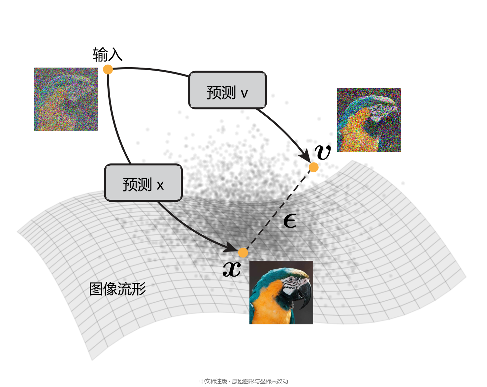
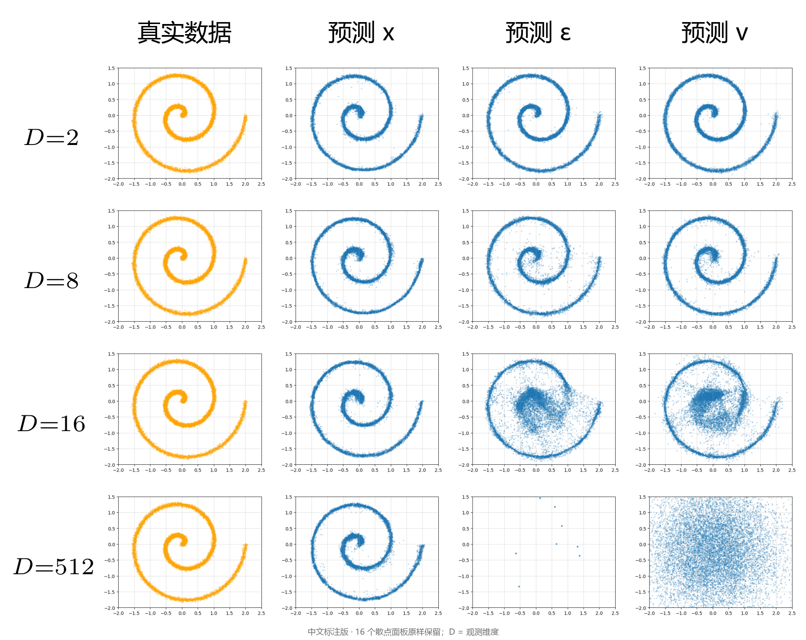
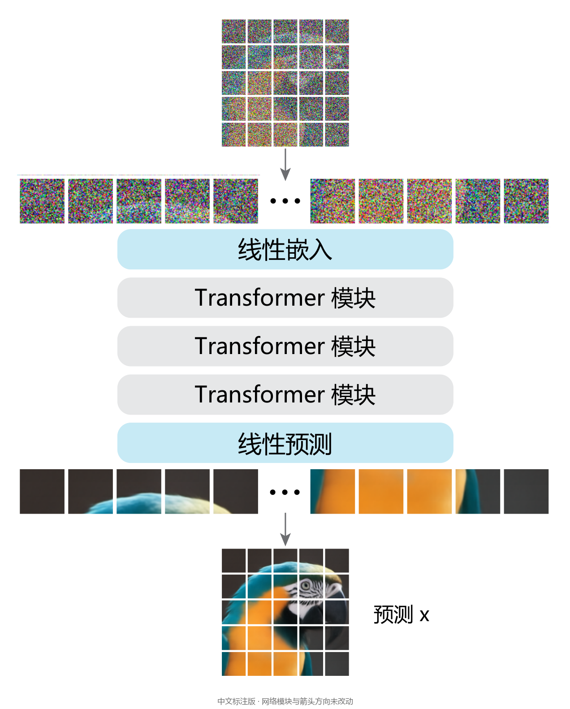
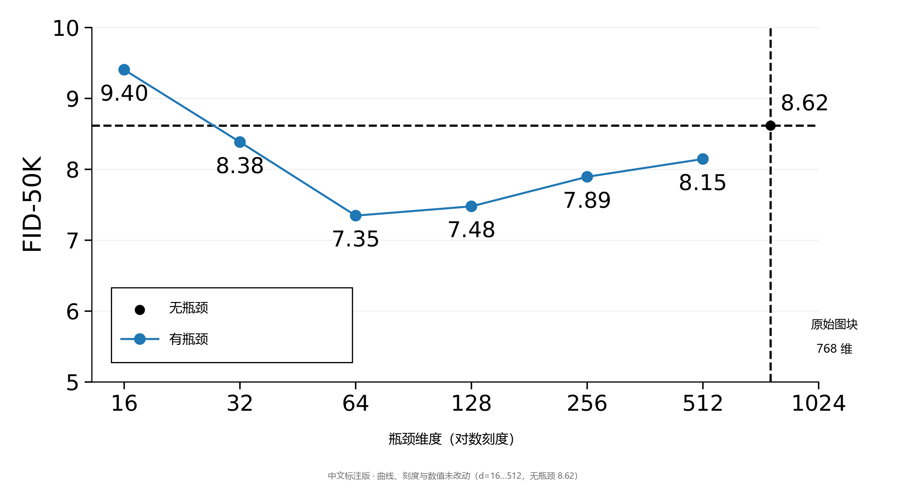
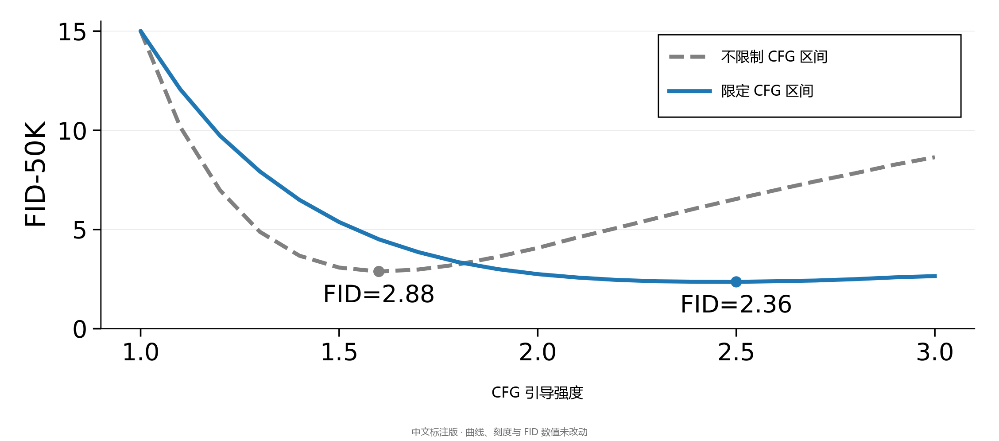
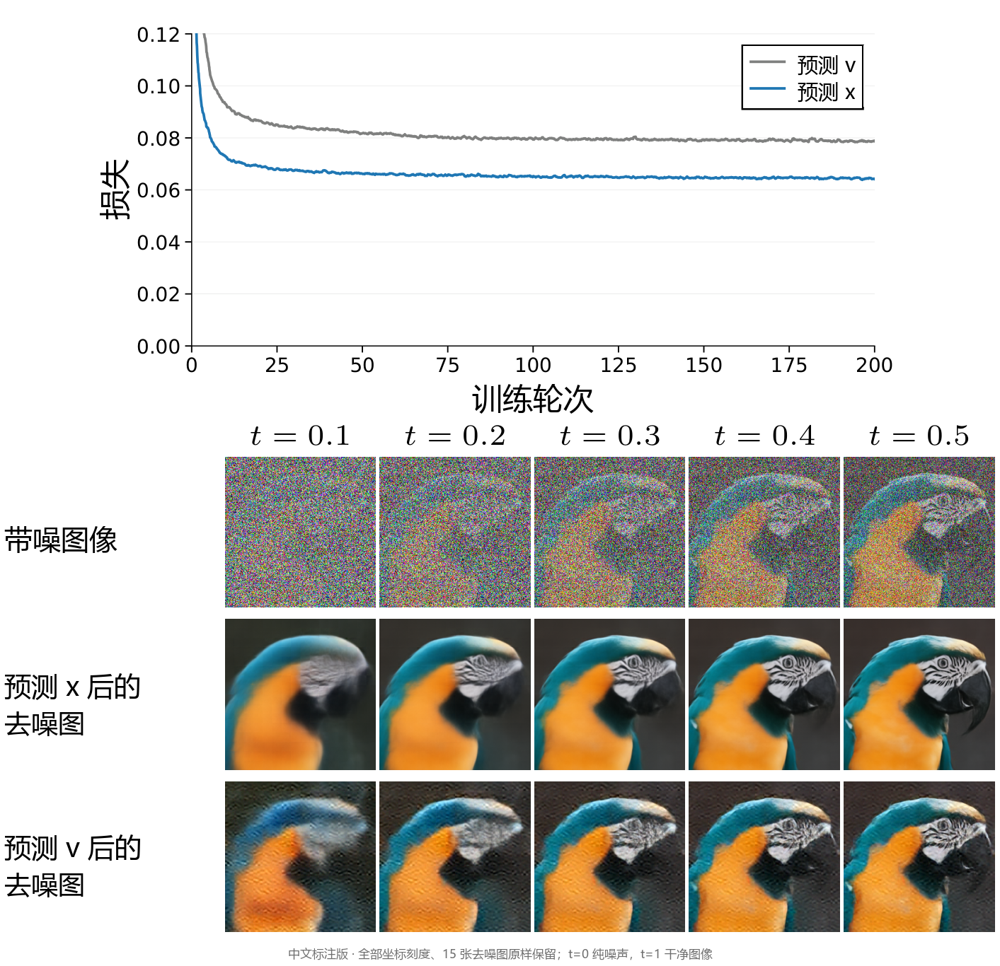
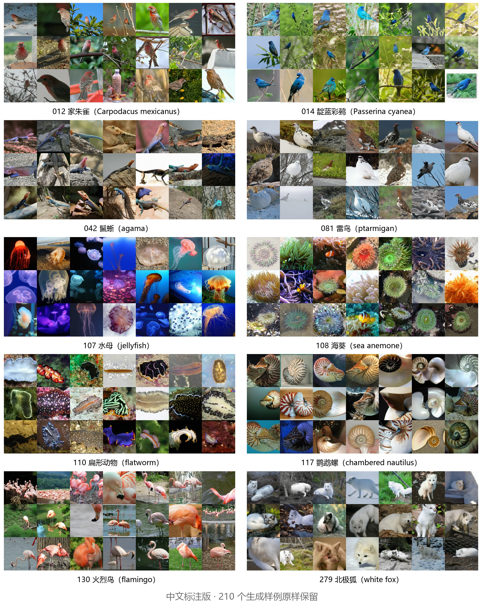
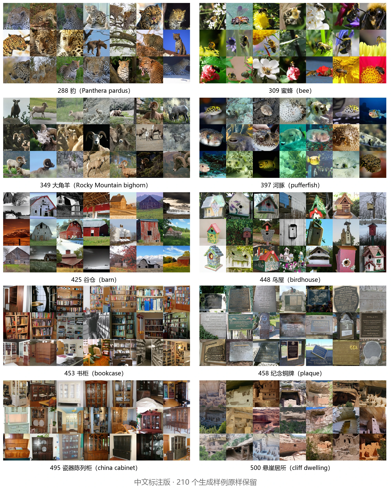
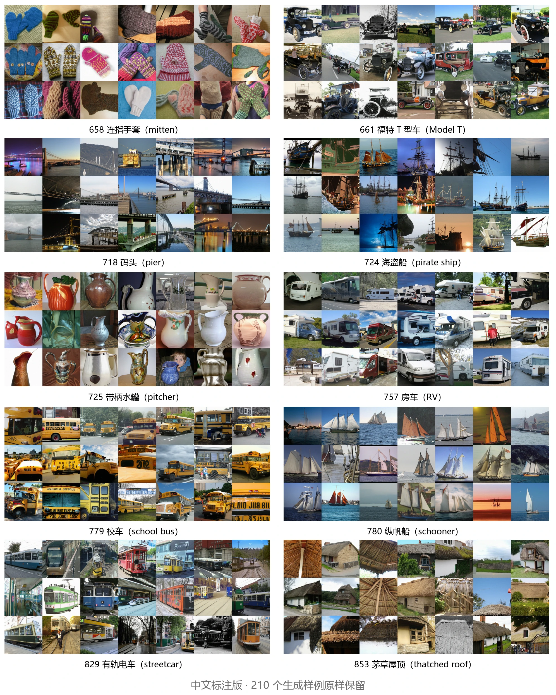
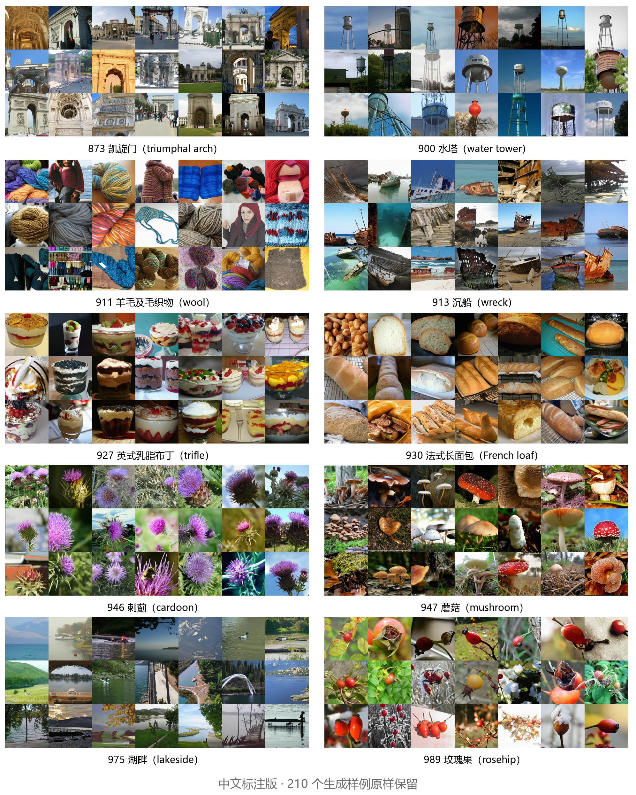

CVPR 2026 · GENERAL METHOD / IMAGENET
回归本源：让去噪生成模型真正去噪
Back to Basics: Let Denoising Generative Models Denoise
扩散模型通常让网络预测噪声或加噪量；这篇论文让网络直接预测干净图像，并用大图块把像素 Transformer 做到有竞争力的 FID。本页逐段对照原文，并把每个公式、图、表和算法讲清楚。
- 原文
- arXiv:2511.13720v2（2026-01-07，18 页）
- 会议
- CVPR 2026 · MIT
- 许可
- CC BY 4.0（原文）
- 规模
- 113 段 · 8 公式 · 11 图 · 13 表 · 79 文献
本页是 arXiv:2511.13720v2（2026-01-07，18 页）的中文全文翻译与精读，不是 CVF 最终排版版本。原文以 CC BY 4.0 发布（已从 arXiv HTML 核实）。作者 Tianhong Li、Kaiming He（MIT）。图中仅翻译文字标注，保留原始曲线、数值与样本内容；网页图片经过缩放与压缩（图 8–11 为 WebP q92），不是 PDF 原像素的逐位副本，原图可通过页面顶部「原文 PDF」查看。所有额外讲解均标为「本站讲解」，与原文分开。
原文与许可：arXiv 摘要 ↗ · 原文 PDF ↗ · CVPR 2026 论文页 ↗ · CC BY 4.0 许可 ↗
读之前，先把这几个量分清
这一段是本站讲解，不是原文。它只做一件事：让你在读到公式 (1)–(8) 时，知道每个符号在做什么。
- 时间方向： 是纯噪声， 是干净图像。采样从 0 积到 1。很多扩散论文方向相反，读的时候先核对。
- 三个量： 干净图像、 噪声、 速度。网络“预测谁”指最后一层直接输出谁；“损失在谁的空间”是另一件事（表 1）。
- token 与 patch 维度：JiT 把图像切成 图块，每块展平成 维 token。分辨率翻倍时 也翻倍，token 数保持 256，但每个 token 变宽。
- 权重的方向：-预测配 -损失，等价于 -MSE 乘 ；权重在 （干净端）变大，不是在高噪声端变大。
推导：-预测 + -损失到底加权在哪一端
- 由定义 ，以及网络换算出的 。
- 两者相减：。
- 平方后：。
- 看权重的两端：（纯噪声）时权重是 1；（干净图像）时未截断的权重发散。实际实现把分母截断到 0.05，权重上限是 ，所以推导里的发散不应读成训练中真的出现无限权重。
- 所以“-预测 + -损失”不是忽略干净端，而是把训练重点压到干净端附近。这与“强调高噪声端”的常见直觉相反，是理解第 4.2 节的关键。
这是代数恒等式，不是“-预测在所有任务上都更好”的证明；它只说明这一组合在优化时把权重放在哪里。
token 数、patch 维度与隐藏维度（表 5/6 的读法）
| 设置 | token 数 | 每个 token 维度 | 隐藏维度 |
|---|---|---|---|
| 256×256，JiT/16 | 16×16 | 16×16×3 = 768 | 768 |
| 512×512，JiT/32 | 16×16 | 32×32×3 = 3072 | 768 |
| 1024×1024，JiT/64 | 16×16 | 64×64×3 = 12288 | 768 |
256 与 512/1024 的 token 数都是 256；变大的是每个 token 的维度。JiT-B 的隐藏维度 768 与 256 分辨率、 的 patch 维度恰好相等，所以表 5 第一行的“每图块维度”和“隐藏维度”相同；512 与 1024 的 patch 维度才远大于隐藏维度。
术语速查（本站整理）
- 流形（manifold）
- 高维空间里一张低维的“薄面”。干净图像集中在这张面上；噪声与速度不在面上。这是本文用来解释“预测干净图像更容易”的假设，不是已证明的定理。
- / /
- 是干净图像， 是标准高斯噪声， 是从噪声指向图像的流速度。三者都是与图像同形状的张量。
- -预测 / -预测 / -预测
- 指网络最后一层直接吐出的量，而不是损失定义在哪个空间。表 1 把“输出空间”和“损失空间”分开列。
- flow matching
- 训练网络回归一个速度场，再用 ODE 积分从噪声走到数据。本文的时间方向是 噪声、 数据。
- patch / token
- 图像切成不重叠的 小块，每块展平成一个 token。JiT/16 在 256 分辨率下是 个 token，每个 token 维。
- 隐藏维度
- Transformer 内部表示的宽度。JiT-B 是 768，与 256 分辨率、 的 patch 维度恰好相等。
- 瓶颈（bottleneck）
- 在 patch 嵌入与 Transformer 之间插入低秩线性层，把每个 token 先压到 维再升回隐藏维度。图 4 显示 最好，不是越小或越大越好。
- CFG / CFG interval
- classifier-free guidance 用有条件与无条件预测的差放大条件；CFG interval 只在部分时间步施加引导。图 6 比较两者的 FID 曲线。
- EMA
- 训练时维护参数的指数滑动平均副本，推理时使用。本文为不同模型分别搜索衰减率。
- 早停
- 监控 FID，开始变差就停止。JiT-G 规模约在 320 轮早停；表 6 的 600 列是训练预算标签，不是实际轮数。
- FID / IS / Precision / Recall
- FID 越低越好，衡量分布距离；IS 越高通常表示样本可辨认且多样；Precision/Recall 分开衡量保真与覆盖。
- 预条件器（pre-conditioner）
- 把网络输出包成 的写法。只有 时，网络输出本身才是 -预测。
摘要
English original
如今的去噪扩散模型并不在经典意义上“去噪”，即它们并不直接预测干净图像。相反，神经网络预测的是噪声或某种加噪后的量。本文认为，预测干净数据与预测加噪量在本质上是不同的。依据流形假设，自然数据应当位于一个低维流形上，而加噪量不是。基于这一假设，我们主张采用直接预测干净数据的模型；这使得表面上看容量不足的网络也能在极高维空间中有效工作。我们表明，仅作用于像素、使用大图块的简单 Transformer 就可以是强生成模型：不用 tokenizer、不做预训练、不加额外损失。我们的方法在概念上不过是“Just image Transformers”，即我们所称的 JiT。我们在 ImageNet 上以 256 和 512 的分辨率、16 和 32 的大图块尺寸报告了有竞争力的结果；在同样的设置下，预测高维加噪量可能灾难性失败。通过让网络回到流形这一根本，我们的研究回到根本，追求一种在原始自然数据上做 Transformer 扩散的自包含范式。
English original
1 引言
English original
扩散生成模型最初被提出时[ [57] , [59] , [23] ]，其核心思想本应是去噪，即从受损版本预测干净图像。然而，扩散模型演化过程中的两个重要里程碑偏离了直接预测干净图像这一目标。首先，直接预测噪声本身（即“-预测”）[23]在生成质量上带来了关键差异，并在很大程度上让这类模型流行起来。后来，扩散模型通过预测流速度（即“-预测”[52]，一个结合了干净数据与噪声的量）与基于流的方法[ [37] , [38] , [1] ]建立了联系。今天，实践中使用的扩散模型通常预测噪声或某种加噪量（例如速度）。
English original
流形假设：干净图像在流形上，噪声与速度在流形外

大量研究[ [52] , [29] , [25] , [15] ]已经表明，预测干净图像（“-预测”[52]）与 -预测、-预测密切相关，前提是相应地重新表述预测损失的加权方式（详见第 3 节）。由于存在这种关系，人们较少关注网络究竟应当直接预测什么，而是隐含地假定网络有能力完成被指派的任务。
English original
然而，干净图像与加噪量（包括噪声本身）的角色并不对等。在机器学习中，长期存在这样一个假设[ [4] , [3] ]：“（高维）数据（大致）位于一个低维流形上”（[ [4] , p.6]）。在这一流形假设下，干净数据可以被建模为位于低维流形上，而加噪量本质上分布在整个高维空间中[69]（见图 1）。预测干净数据与预测噪声或加噪量有根本区别。
English original
本站讲解：先弄懂“低维流形”到底在说什么
设想这样一个情形：一个低维流形嵌入在高维观测空间之中。在这个高维空间里预测噪声需要高容量：网络必须保留关于噪声的全部信息。相反，容量有限的网络仍然可以预测干净数据，因为它只需要保留低维信息，同时把噪声滤除。
English original
当使用低维空间（例如图像潜变量[49]）时，预测噪声的难度得到缓解，但这一难度同时是被隐藏、而非被解决。一旦涉及像素或其他高维空间，现有扩散模型仍可能难以应对维数灾难[4]。对预训练潜空间的重度依赖使扩散模型无法自包含。
English original
为了追求自包含这一原则，像素空间中的扩散建模受到了高度重视[ [7] , [25] , [26] , [6] , [70] ]。总体而言，这些方法以显式或隐式的方式避开网络中的信息瓶颈，例如使用密集卷积或更小的图块、增加通道数、或加入长跳跃连接。我们认为，这些设计可能源自预测高维加噪量的需求。
English original
本文回到第一性原理，让神经网络直接预测干净图像。由此我们表明，一个朴素的 Vision Transformer（ViT）[13]，在由原始像素组成的大图块上运行，就可以有效地进行扩散建模。我们的方法自包含，不依赖任何预训练或辅助损失——没有潜变量 tokenizer[49]，没有对抗损失[ [16] , [49] ]，没有感知损失[ [77] , [49] ]（因而没有预训练分类器[56]），也没有表征对齐[74]（因而没有自监督预训练[45]）。在概念上，我们的模型不过就是把“Just image Transformers”（我们称之为 JiT）用于扩散。
English original
本站讲解：“自包含”具体指省掉了什么
我们在 ImageNet 数据集[11]上进行实验，分辨率分别为 256 和 512，使用图块尺寸分别为 16 和 32 的 JiT 模型。尽管图块维度非常高（数百或数千维），我们使用 -预测的模型仍能轻松取得强结果，而 -预测与 -预测在此情形下灾难性失败。进一步的分析表明，网络宽度并不需要匹配或超过图块维度；事实上，出乎意料的是，瓶颈设计甚至可能有益，这与经典流形学习中的观察相呼应。
English original
我们的工作是在原生数据上迈向自包含的“Diffusion + Transformer”理念[46]的一步。除计算机视觉之外，这一理念在涉及自然数据的其他领域（例如蛋白质、分子或天气）中也极具吸引力，因为这些领域中 tokenizer 难以设计。通过尽量减少领域特定的设计，我们希望源自计算机视觉的通用“Diffusion + Transformer”范式能找到更广泛的应用。
English original
2 相关工作
English original
扩散模型及其预测。
English original
扩散模型的开创性工作[57]提出学习一个逆向随机过程，其中网络预测正态分布的参数（例如均值与标准差）。在其提出五年之后，这一方法被 Denoising Diffusion Probabilistic Models（DDPM）[23]重新激活并推广：其中一项关键发现是让噪声成为预测目标（即 -预测）。
English original
随后，[52]（最初是在模型蒸馏的背景下）研究了不同预测目标之间的关系，并在其中引入了 -预测这一概念。他们的工作关注重参数化所带来的加权效应。
English original
与此同时，EDM[29]围绕去噪器函数（denoiser）重新表述了扩散问题，这是扩散模型演化中的一个重要里程碑。然而，EDM 采用了预条件化的表述，网络的直接输出并不是去噪后的图像。这种表述在低维情形下更可取，但它本质上仍要求网络输出一个混合了数据与噪声的量（更多比较见附录）。
English original
Flow Matching 模型[ [37] , [38] , [1] ]可以解释为扩散建模范式内的一种 -预测[52]形式。与纯噪声不同， 是数据与噪声的组合。基于流的模型与先前扩散模型之间的联系已经建立[15]。今天，扩散模型及其基于流的对应物常常在统一框架下被研究。
English original
去噪模型。
English original
去噪自编码器（DAE）[ [68] , [69] ]是作为一种无监督表征学习方法发展起来的，以去噪作为其训练目标。它们借助流形假设[4]（图 1）来学习有意义的、能近似低维数据流形的表征。DAE 可以被视为 Denoising Score Matching[67]的一种形式，而后者又与基于分数的现代扩散模型[ [59] , [60] ]密切相关。然而，尽管 DAE 为进行流形学习而预测干净数据是自然的，在 score matching 中，预测 score 函数实际上等同于预测噪声（相差一个缩放因子），即 -预测。
English original
流形学习。
English original
流形学习一直是一个经典领域[ [51] , [63] ]，专注于从观测数据中学习低维、非线性的表征。总体而言，流形学习方法利用瓶颈结构[ [64] , [48] , [41] , [2] ]，只鼓励有用的信息通过。若干研究探讨了流形学习与生成模型之间的联系[ [39] , [27] , [8] ]。Latent Diffusion Models（LDM）[49]可以被视为在第一阶段通过自编码器进行流形学习，在第二阶段再进行扩散。
English original
像素空间扩散。
English original
尽管潜变量扩散[49]在今天已成为该领域的默认选择，扩散模型的发展最初却始于像素空间的表述[ [59] , [23] , [44] , [12] ]。早期像素空间扩散模型通常基于密集卷积网络，最常见的是 U-Net[50]。这类模型常常使用过完备的通道表示（例如在第一层把 变为 ），并配有长程跳跃连接。虽然这些模型对 -预测与 -预测效果良好，但其密集卷积结构通常计算开销很大。把这类卷积模型应用到高分辨率图像并不会导致灾难性退化，因此该方向的研究通常聚焦于噪声调度和/或加权方案[ [7] , [25] , [26] , [30] ]，以进一步提升生成质量。
English original
相比之下，把 Vision Transformer（ViT）[13]直接用于像素是一项更具挑战性的任务。标准 ViT 架构采用激进的图块尺寸（例如 16 16 像素），由此得到高维的 token 空间，其维度可与 Transformer 的隐藏维度相当甚至更大。SiD2[26]与 PixelFlow[6]采用从小图块开始的分层设计；然而，这些模型是“FLOP-heavy”的[26]，并且丧失了标准 Transformer 固有的通用性与简洁性。PixNerd[70]采用一个 NeRF 头[43]，整合来自 Transformer 输出、噪声输入与空间坐标的信息，训练时还借助表征对齐[74]来辅助。
English original
即便采用这些专用设计，这些工作中的架构通常也从“L”（Large）或“XL”规模起步。事实上，一项最新工作[73]表明，对于高维情形，较大的隐藏维度似乎是必要的。
English original
高维扩散。
English original
在使用 ViT 式架构时，现代扩散模型仍受高维输入空间的挑战，无论输入是像素还是潜变量。文献[ [8] , [73] , [55] ]中反复报告，无论使用像素还是潜变量，当每个 token 的维度增加时，ViT 式扩散模型都会迅速且灾难性地退化。
English original
与我们的工作同时，一系列研究[ [78] , [34] , [55] ]求助于自监督预训练来解决高维扩散问题。与这些努力不同，我们表明高维扩散无需任何预训练即可实现，而且只用 Transformer。
English original
-预测。
English original
-预测的表述是自然的，也并不新颖；它至少可以追溯到最初的 DDPM[23]（见其代码[24]）。然而，DDPM 观察到 -预测显著更好，这一点后来成为首选方案。在后续工作中（例如[26]），尽管分析有时更倾向于在 -空间中进行，实际的预测却常常在其他空间完成，很可能是出于历史遗留原因。
English original
至于扩散所处理的图像复原应用[ [10] , [72] , [42] ]，让网络预测干净数据是自然的，因为这正是图像复原的最终目标。与我们的工作同时，[18]也主张使用 -预测，用于以先前帧为条件的生成式世界模型。
English original
我们的工作并非要重新发明这一基本概念；相反，我们想提请注意一个在具有潜在低维流形的高维数据背景下被大量忽视、却十分关键的问题。
English original
组合与换算关系（对角线为直接输出）
| 损失空间 | 损失函数 | (a) -预测： | (b) -预测： | (c) -预测： |
|---|---|---|---|---|
| (1) -损失 | （网络直接输出） | |||
| (2) -损失 | （网络直接输出） | |||
| (3) -损失 | （网络直接输出） |
本站讲解（非原文）
怎么读
- 先读行列标：三行是损失定义在哪个空间（、、），三列是网络 直接输出哪个空间。
- 对角线三格（(1)(a)、(2)(b)、(3)(c)）是「直接输出」，不需要变换，因此加粗标注。
- 非对角格是「网络输出空间 ≠ 损失空间」时的换算公式：先用公式把网络输出转成该行损失需要的量，再算损失。
- 举例：(3)(a) 表示网络输出 、用 -损失，于是先算 再与 比。
- 两处数值细节：直接 -预测在计算 时， 在 接近 0，实现上要截断分母（配置表默认 0.05）；含 的换算则在 奇异，属于其他参数化的实现问题。
要点这张表给出 三种量两两互换的完整公式，并说明九种「损失空间 × 输出空间」组合都能写出目标函数。它们可以互相换算，但两两并不数学等价：网络实际拟合的量不同，有效权重也不同。本文最终选 (3)(a)（-预测 + -损失）。
3 扩散模型的预测输出
English original
扩散模型可以在 、 或 空间中表述。空间的选择不仅决定了损失定义在哪里，也决定了网络预测什么。重要的是，损失空间与网络输出空间不必相同。这一选择可能带来关键差异。
English original
本站讲解：输出空间和损失空间是两件独立的事
3.1 背景：扩散与流
English original
扩散模型可以从 ODE 的角度来表述[ [5] , [60] , [37] , [58] ]。我们以基于流的范式[ [37] , [38] , [1] ]（即 空间）作为更简单的起点开始表述，然后再讨论其他空间。
这条式子定义时间轴： 时 ，是纯噪声； 时 ，是干净图像。中间是二者的线性插值。读论文时先确认这个方向，否则会把“高噪声端”和“干净端”弄反。
English original
这使得当 时 。我们对 使用 logit-normal 分布[15]，即 。
English original
流速度 定义为 的时间导数，即 。给定式 1，我们有：
English original
速度 是沿这条直线从噪声指向干净图像的向量。因为 对 的导数是 ，所以速度在整个路径上是常量，不随 改变。
English original
训练目标是让网络预测的速度接近真实速度 。这是 flow matching 的标准 L2 损失；损失定义在 空间，而网络直接输出可以是 、 或 （表 1）。
English original
采样时解这个常微分方程：从 的噪声出发，沿网络给出的速度场积分到 。Euler 是一阶近似（算法 2），实验默认用二阶的 Heun。
English original
从 出发，结束于 。实践中，该 ODE 可以用数值求解器近似求解。默认情况下，我们使用 50 步的 Heun。
English original
3.2 预测空间与损失空间
English original
预测空间。
English original
网络的直接输出可以定义在任意空间中：、 或 。下面讨论由此产生的变换。注意，在本文语境下，只有当网络 的直接输出严格为 、、 时，我们才分别称其为“、、-预测”。
English original
当网络直接输出 时，另外两个量由代数关系确定：，。 时分母接近零，实现要截断（默认 0.05）。
English original
这里，记号 、、 表明它们都是依赖于 的预测。解这个方程组得到： 与 ，也就是说， 与 都可以由 与网络输出 算出。这些结果汇总在表 1的 (a) 列中。
English original
类似地，当我们令网络的直接输出 为 或 时，我们得到另两组方程（替换式 5中的第一式）。这些变换汇总在表 1的 (b)、(c) 两列中，分别对应 -预测与 -预测。这表明，当预测 中的一个量时，另外两个可以被推断出来。许多先前工作（例如[ [52] , [15] ]）中的推导都是表 1所涵盖的特例。
English original
损失空间。
English original
虽然损失常常在某一个参考空间中定义（例如式 3中的 -损失），但从概念上讲，它可以定义在任意空间。已有研究表明[ [52] , [15] ]，在从一个预测空间到另一个的重参数化下，损失实际上被重新加权。
例如，考虑表 1(3)(a) 中 -预测与 -损失的组合。我们以 作为预测，以 作为目标。式 3中的 -损失变为： 这是 -损失的一种重新加权形式。对表 1中列出的任意预测空间与任意损失空间，都可以做类似的变换。
English original
本站讲解：时间往哪边走，权重压在哪一端
综合起来，考虑在 中定义的三种未加权损失，以及网络直接输出的三种形式，共有九种可能的组合（表 1）。每种组合都构成一个有效的表述，而九种情形中没有任何两种在数学上等价。
English original
本站讲解：九种组合为什么不能当成同一个目标函数
生成器空间。
English original
玩具实验：观测维度升高时只有 -预测仍能恢复低维结构

本站讲解（非原文）
标签对照
- ground-truth真值分布（参照）
- -pred-预测
- -pred-预测
- -pred-预测
- 观测维度
- 观测维度
- 观测维度
- 观测维度
怎么读
- 按行读：每一行是同一个二维底层数据在不同观测维度 下的结果， 依次为 2、8、16、512。
- 按列读：第一列 ground-truth 是二维真值，作为形状参照；后三列分别是 -、-、-预测生成的样本。
- 时四列都接近真值；此时观测维度 就等于底层真实维度 ，任务最简单。隐藏维度始终是 256，与 无关。
- 时 -/-预测的样本开始散开； 时明显变形； 时 -预测只剩零散可见点，-预测呈散点云，二者都没有恢复螺旋结构。
- 对比 -预测这一列：从 到 都保持了二维形状，即使 256 维 MLP 的容量远小于 512 维观测空间。
要点在容量不足（256 维 MLP 对 512 维观测）的受控条件下，-预测仍能恢复低维结构，而 -/-预测失败。作者用它支撑「低维流形上的预测任务更容易」这一假设，并对应到真实数据上的表 2(a)。
边界实验只有 、一个 5 层 MLP、统一使用 -损失，且 只取了 4 个值。它说明的是这个合成设定下的现象，不能直接外推到 ImageNet、卷积网络或更大的 Transformer。
3.3 玩具实验
English original
我们考虑如下玩具情形： 维的潜在数据“埋”在观测到的 维空间中（）。我们用列正交的投影矩阵 （即 ）合成这一情形。矩阵 随机生成并固定。观测数据为 ，其中潜在数据为 。模型并不知道矩阵 ，因此对模型而言这是一个 维的生成问题。
English original
我们训练一个隐藏单元为 256 维的 5 层 ReLU MLP 作为生成器，结果可视化在图 2中。可视化的做法是用 把 维的生成样本投影回 维。我们考察 时 的情形。我们研究 -、-、-预测，三者都使用 -损失，即表 1的 (3)(a-c)。
English original
图 2显示，当 增大时，只有 -预测能产生合理的结果。对于 -/-预测，模型在 时已经吃力，在 时灾难性失败——此时 256 维的 MLP 是不完备的（under-complete）。
English original
本站讲解：这个玩具实验该怎么读
值得注意的是，即使模型不完备，-预测也能良好工作。这里，256 维的 MLP 在 维空间中不可避免地丢弃信息。然而，由于真实数据位于低维的 维空间中，-预测仍能表现良好，因为理想输出隐含地只是 维的。我们在 ImageNet 真实数据上也得到类似的观察，如下文所示。
English original
4 用于扩散的“Just Image Transformers”
English original
在上述分析的驱动下，我们表明，直接在像素上运行的普通视觉 Transformer（ViT）[13] 可以工作得惊人地好，且只需使用 预测。
English original
4.1 就是图像 Transformer
English original
ViT [13] 的核心思想是“Transformer on Patches（ToP，作用在 patch 上的 Transformer）”。我们的架构设计遵循这一理念。[2]
English original
形式上，考虑 维的图像数据（）。所有 、、 和 都具有相同的维度。给定一幅图像，我们将其划分为大小为 的不重叠 patch，得到一个长度为 的序列。每个 patch 是一个 维向量。该序列经线性嵌入投影处理，加上位置嵌入 [66]，再由一叠 Transformer 块 [66] 映射。输出层是一个线性预测器，把每个 token 投影回 维的 patch。见图3。
English original
按照标准做法，该架构以时间 和给定类别标签为条件。我们使用 adaLN-Zero [46] 进行条件化，稍后还会讨论其他选项。在概念上，这一架构相当于把扩散 Transformer（DiT）[46] 直接作用于像素 patch。
整体架构不过是“Just image Transformers”（就是图像 Transformer），我们称之为 JiT。例如，我们在 图像上研究 JiT/16（即 patch 大小 ，[13]），在 图像上研究 JiT/32（）。这两种设置下每个 patch 的维度分别为 768（）和 3072（）。如此高维的 patch 可以由 预测来处理。
English original
本站讲解：patch 维度与 token 数的区别
JiT 架构：作用在像素图块上的普通 ViT

本站讲解（非原文）
标签对照
- noisy image patches含噪图像的像素图块（每个 ）
- 省略号：图块序列的其余位置
- Linear Embed线性嵌入
- Transformer BlockTransformer 块（图中画了 3 个）
- Linear Predict线性预测（输出头）
- -pred-预测（拼回的干净图像）
怎么读
- 从顶部开始：加噪图像被切成不重叠的 图块，每个图块是 维向量。
- 图块被展平成一个序列；中间的「」只是省略其余位置，不表示长度可变。本文按分辨率比例放大 patch，序列长度恒为 256 个 token。
- 线性嵌入(Linear Embed)把每个图块线性投影到隐藏维度，并加上位置编码；随后经过若干 Transformer 块。
- 线性预测(Linear Predict)把每个 token 线性映回 的图块，这是唯一的输出头。
- 底部把预测出的干净图块拼回完整图像，右侧标注“预测x”(-pred)。整张图里没有 VAE、没有离散 tokenizer、没有额外解码器。
要点JiT 的结构就是「ViT + 像素图块 + 线性输出头」，网络直接输出干净图像而不是噪声。这为后续所有实验提供统一的、任务无关的骨架。
边界示意图省略了时间步与类别条件（adaLN-Zero）、CFG 以及瓶颈/In-context 变体；图中没有参数量、维度标注或性能数字，不能据此判断效果。
4.2 网络应当预测什么？
English original
我们在表1中汇总了损失空间与预测空间的九种可能组合。对其中每种组合，我们训练一个“Base” [13] 模型（JiT-B），其每个 token 的隐藏维度为 768。我们在表2(a) 中研究 分辨率下的 JiT-B/16。作为参照，我们在表2(b) 中考察 下的 JiT-B/4（即 ）。两种设置下的序列长度相同（1616）。
English original
我们得出以下观察：
English original
预测至关重要。
English original
在表2(a) 的 JiT-B/16 中，只有 预测表现良好，并且它在三种损失下都有效。这里每个 patch 是 768 维（），恰好与 JiT-B 的 768 维隐藏维度相同。这看似“差不多够用”，但实践中模型可能需要额外的容量，例如用于处理位置嵌入。对于 / 预测，模型没有足够的容量来分离并保留加噪后的量。这些观察与玩具实验（图2）中的情况类似。
English original
作为对照，我们考察 分辨率下的 JiT-B/4（表2(b)）。此时所有情形都表现尚可：九种组合之间的准确度差距是边缘性的，不具决定性。每个 patch 的维度为 48（），远低于 JiT-B 的 768 维隐藏维度，这解释了为何所有组合都能正常工作。我们注意到，许多先前的潜空间扩散模型具有同样小的输入维度，因此没有暴露于我们此处讨论的问题。
English original
(a) ImageNet 256×256，JiT-B/16（每图块 768 维）
| 损失空间 \ 网络输出 | (a) -预测 | (b) -预测 | (c) -预测 |
|---|---|---|---|
| -损失 | 10.14 ✓（合理） | 379.21 ✗（灾难） | 107.55 ✗（灾难） |
| -损失 | 10.45 ✓（合理） | 394.58 ✗（灾难） | 126.88 ✗（灾难） |
| -损失 | 8.62 ✓（合理） | 372.38 ✗（灾难） | 96.53 ✗（灾难） |
(b) ImageNet 64×64，JiT-B/4（每图块 48 维）
| 损失空间 \ 网络输出 | (a) -预测 | (b) -预测 | (c) -预测 |
|---|---|---|---|
| -损失 | 5.76 ✓ | 6.20 ✓ | 6.12 ✓ |
| -损失 | 3.56 ✓ | 4.02 ✓ | 3.76 ✓ |
| -损失 | 3.55 ✓ | 3.63 ✓ | 3.46 ✓ |
本站讲解（非原文）
怎么读
- 两张子表结构相同：行是损失空间，列是网络直接输出空间；数字是 FID-50K，越低越好。
- 先看 (a)：只有 -预测那一列是 8–10 的量级，其余两列是 96–395，差了一个数量级以上。
- 在 (a) 里横向比较：同样是 -预测，配 -损失最好（8.62），配 -损失 10.45，配 -损失 10.14。
- 再看 (b)：九格全部在 3.46–6.20 之间，最优 3.46（-损失 + -预测），最差 6.20，差距远小于 (a)。
- 把 (a)(b) 对齐看维度：768 维图块 vs 48 维图块，而两者序列长度相同（都是 16×16），差别就在每图块的观测维度上。
要点在每图块 768 维时，只有 -预测能正常工作，-/-预测无论配哪种损失都灾难性失败；把图块缩到 48 维后，九种组合都合理。这正是「观测维度高时预测含噪量更难」的核心证据。
说明中文版用 ✓ / ✗ 对应原表的颜色标记：✓ 表示该组合能正常工作，✗ 表示灾难性失败。数值与原表一致，颜色不改变含义。
损失加权并不足够。
English original
我们的工作并非首次枚举相关因素的组合。文献 [52] 探索了损失加权与网络预测的组合。他们的实验在低维的 CIFAR-10 数据集上使用 U-net 完成。他们的观察更接近我们在 ImageNet 上的结果。[3]
English original
然而，ImageNet 上的表2(a) 表明，损失加权并不是全部。一方面，无论损失空间如何， 预测与 预测在表2(a) 中都灾难性地失败，而不同损失空间对应着不同的有效加权（如前所述）。另一方面， 预测在全部三种损失空间下都有效： 损失所诱导的损失加权更可取，但并不关键。[4]
English original
噪声水平平移并不足够。
English original
先前工作 [7]、[25]、[26] 提出，提高噪声水平对高分辨率像素扩散有益。我们用 JiT-B/16 在表3中考察这一点。由于我们使用 logit 正态分布 [15] 采样 （见附录），可以通过改变该分布的参数 来平移噪声水平：直观上，把 向负方向移动会得到更小的 ，从而提高噪声水平（式1）。
English original
表3显示，当模型本已表现尚可（此处为 预测）时，适当高的噪声是有益的，这与先前的观察 [7]、[25]、[26] 一致。然而，仅调整噪声水平无法挽救 或 预测：它们的失败本质上源于无法传递高维信息。
English original
附带说明，根据表3，我们在 ImageNet 的其他实验中设置 = –0.8。
English original
增加隐藏单元并非必要。
English original
由于容量可能受网络宽度（即隐藏单元数量）限制，一个自然的想法是增加宽度。然而，当观测维度非常高时，这种补救既缺乏原理依据，也不可行。我们表明，在 预测的情形下这并无必要。
English original
在下一节的表5和表6中，我们给出分辨率 512 下 JiT/32 与分辨率 1024 下 JiT/64 的结果，使用按比例放大的 patch 大小 或 。这相当于每个 patch 3072 维（即 ）或 12288 维，远大于 B、L、H 模型的隐藏维度（定义见 [13]）。尽管如此， 预测依然工作良好；事实上，除了按比例缩放噪声（例如在分辨率 512 和 1024 下分别放大 2 倍和 4 倍；见附录）之外，它无需任何修改。
English original
这一证据表明，网络设计可以在很大程度上与观测维度解耦，正如许多其他神经网络应用中的情形。增加隐藏单元数量可能有益（这在深度学习中已被广泛观察到），但它不是决定性的。
English original
平移（）与三种预测的 FID-50K
| 平移（） | 噪声水平 | -预测 | -预测 | -预测 |
|---|---|---|---|---|
| 较低噪声 | 14.44 ✓ | 464.25 ✗ | 120.03 ✗ | |
| 9.79 ✓ | 372.91 ✗ | 109.93 ✗ | ||
| 8.62 ✓ | 372.36 ✗ | 96.53 ✗ | ||
| 较高噪声 | 8.99 ✓ | 355.25 ✗ | 106.85 ✗ |
本站讲解（非原文）
怎么读
- 纵轴是 的四档取值；按定义 ， 越负，采到的 越小，而 ，所以噪声越大。原图把「较低噪声」标在顶部、「较高噪声」标在底部。
- 只看 -预测列：14.44 → 9.79 → 8.62 → 8.99，先降后升，最优在 （8.62）。
- 再看 -预测列：355.25–464.25，随 变化只有几十的波动，始终不可用。
- -预测列同理：96.53–120.03，最好也只是接近 100，仍比 -预测差一个数量级。
- 据此作者在 256×256 的其他实验里固定 。
要点在模型已经能工作的前提下（-预测），适当提高噪声水平能把 FID 从 14.44 降到 8.62；但对 -/-预测，所测试的噪声平移只能小幅挪动，不足以挽救失败。
说明中文版用 ✓ / ✗ 对应原表的颜色标记（✓ 可用，✗ 失败）；数值与原表一致。
瓶颈线性嵌入：64 维处 FID 最低，优于无瓶颈的 768 维

本站讲解（非原文）
标签对照
- bottleneck dimension (log-scale)瓶颈维度 （对数刻度），刻度为 16、32、64、128、256、512、1024
- FID-50KFID-50K（纵轴，越低越好，范围 5–10）
- no bottleneck无瓶颈（黑色虚线基准）
- bottleneck使用瓶颈（蓝色折线）
- raw patch 768-d原始图块 768 维（虚线右端的黑点，FID 8.62）
- 9.40 时 FID 9.40
- 8.38 时 FID 8.38
- 7.35 时 FID 7.35（曲线最低点）
- 7.48 时 FID 7.48
- 7.89 时 FID 7.89
- 8.15 时 FID 8.15
怎么读
- 横轴是对数刻度的瓶颈维度 （16 到 1024），纵轴是 FID-50K，越低越好。
- 先找基准：黑色水平虚线是无瓶颈的 768 维原始图块，FID=8.62，右侧黑点标注 raw patch 768-d。
- 沿蓝线从左往右读：16 维 9.40（比基准差），32 维已降到 8.38（略好于基准）。
- 最低点在 64 维：7.35，比 8.62 低 1.27，是全文提到的「最多约 1.3 FID」增益。
- 继续加宽反而回升：128 维 7.48、256 维 7.89、512 维 8.15，但三者仍低于 8.62。曲线在 64 维附近是明显的谷底。
- 注意横轴上 1024 只是刻度延伸，，没有 1024 维的瓶颈数据点。
要点在 32–512 的宽范围内，加一层低秩瓶颈都比不加更好，最佳点约在 64 维（7.35，比 8.62 好 1.27）；即使压到 16/32 维也不会灾难性失败。作者据此说明网络宽度不必匹配观测维度，瓶颈反而能起到正则/低维表征的作用。
边界数据只来自 JiT-B/16、单一分辨率、200 轮；曲线非单调，所以不能把 64 维当成普适最优，也不能说「瓶颈越窄越好」或「越宽越好」。图里没有多随机种子或误差棒，无法判断 7.35 与 7.48 的差距是否显著。
瓶颈可以带来收益。
English original
更令人意外的是，我们发现反过来也成立：在网络中引入降低维度的瓶颈可以带来收益。
English original
具体来说，我们把线性的 patch 嵌入层变成低秩线性层，方法是将其替换为一对瓶颈（但仍然线性）的层。第一层把维度降到 ，第二层再扩展到 Transformer 的隐藏维度。两层都是线性的，构成一种低秩重参数化。
English original
图4 画出 FID 随瓶颈维度 的变化，使用 JiT-B/16（每个原始 patch 768 维）。降低瓶颈维度，即使小到 16 维，也不会导致灾难性失败。事实上，瓶颈维度在很宽的范围（32 到 512）内都能提升质量，幅度可观，最高约 1.3 FID。
English original
本站讲解：瓶颈为什么会有用
# net(z, t)：JiT 网络
# x：一个训练批次
t = sample_t() # 采样时间步 t（logit-normal）
e = randn_like(x) # 采样与 x 同形状的标准高斯噪声 ε
z = t * x + (1 - t) * e # 构造含噪样本 z_t = t·x + (1−t)·ε
v = (x - z) / (1 - t) # 目标流速度 v = (x − z_t)/(1 − t)
x_pred = net(z, t) # 网络直接输出干净图像（x-预测）
v_pred = (x_pred - z) / (1 - t) # 把 x-预测换算成 v-预测
loss = l2_loss(v - v_pred) # 在 v-空间计算 L2 损失本站讲解（非原文）
怎么读
- 第 1–2 行是注释：net(z, t) 是 JiT 网络，x 是一个训练批次。
- t = sample_t()：按 logit-normal 分布采样时间步 t；默认参数 μ=−0.8、σ=0.8。
- e = randn_like(x)：采样与图像同形状的高斯噪声 ε。
- z = t*x + (1−t)*e：线性插值构造含噪样本；t=1 时是干净图像，t=0 时是纯噪声。
- v = (x − z)/(1−t)：由 z 的定义直接得到目标速度 v = x − ε（因为 x − z = (1−t)(x−ε)）。
- x_pred = net_fn(z, t)：网络直接输出干净图像，这是全文的关键选择。
- v_pred = (x_pred − z)/(1−t)：按表 1 的 (3)(a) 把 x-预测确定性地换算成 v-预测。
- loss = l2_loss(v − v_pred)：损失仍在 v-空间计算；代码里没有对 (1−t) 做截断，实际实现默认把分母截断到 0.05 以防止除零。
要点
边界实现细节（不在伪代码中）：计算 时会把分母截断到默认 0.05，避免 时除零；伪代码本身不额外改变采样或训练行为。
# z：当前时刻 t 的样本
x_pred = net(z, t) # 网络直接预测干净图像
v_pred = (x_pred - z) / (1 - t) # 换算为流速度 v
z_next = z + (t_next - t) * v_pred # Euler 步：沿速度场走到 t_next本站讲解（非原文）
怎么读
- 第 1 行注释：z 是当前时刻 t 的样本；采样从 t=0（噪声）走向 t=1（数据）。
- x_pred = net_fn(z, t)：与训练完全相同的网络调用，仍然直接输出干净图像。
- v_pred = (x_pred − z)/(1−t)：把干净图像预测换算成速度，这一步让采样只依赖 x-预测。
- z_next = z + (t_next − t)*v_pred：一阶 Euler 更新，用 (t_next−t) 作为步长沿速度场前进。
- 整个采样循环就是反复执行这三行；论文默认用 50 步 Heun 求解器，此处给出的是可扩展的 Euler 最小版本。
- 类别条件与 CFG 被省略，实际实现按标准做法加入；1/(1−t) 的分母在实现中同样截断到 0.05。
要点
边界实现细节（不在伪代码中）：计算 时会把分母截断到默认 0.05，避免 时除零；伪代码本身不额外改变采样或训练行为。
4.3 我们的算法
English original
我们最终的算法采用 预测与 损失，对应表1的 (3)(a)。形式上，我们优化：
English original
本站讲解：为什么可以“输出 x、用 v 损失”
这就是 JiT 的实际目标：网络输出干净图像 ，再换算成 去匹配 ，对应表 1 的 (3)(a)。下面的推导会说明，它等价于对 -MSE 乘权重 。
English original
算法1 给出一个训练步的伪代码，算法2 是采样步的伪代码（欧拉求解器；可扩展到 Heun 或其他求解器）。为简洁起见，类别条件与 CFG [22] 被省略，但二者都遵循标准做法。为避免 中的除零，我们在计算该除法时对其分母做裁剪（默认 0.05）。
English original
4.4 “Just Advanced” Transformer（进阶版 Transformer）
English original
通用 Transformer [66] 的优势部分在于：当其设计与具体任务解耦时，它可以受益于在其他应用中发展出来的架构进步。这一性质正是用任务无关的 Transformer 来表述扩散的优势所在。
English original
遵循 [73]，我们引入了流行的通用改进：SwiGLU [54]、RMSNorm [75]、RoPE [62]、qk-norm [19]，它们最初都是为语言模型开发的。我们还探索了 in-context 类别条件：但与原始 ViT [13] 在序列中追加一个类别 token 不同，我们追加多个这样的 token（默认 32 个；见附录），遵循 [35]。表4 报告了这些组件的效果。[5]
English original
本站讲解：被搬进来的“通用改进”有哪些
5 对比
English original
逐项叠加 RoPE/qk-norm 与 in-context 类别 token
| 配置 | JiT-B/16 | JiT-L/16 |
|---|---|---|
| 基线（SwiGLU、RMSNorm） | 7.48（6.32） | — |
| + RoPE、qk-norm | 6.69（5.44） | — |
| + in-context 类别 token | 5.49（4.37） | 3.39（2.79） |
本站讲解（非原文）
怎么读
- 每行是上一行再叠加一个组件，数值是 FID-50K；括号内是使用 CFG interval 后的结果。
- 基线 7.48 对应图 4 中 128 维瓶颈的点，所以这张表是在瓶颈嵌入之上做消融。
- 加 RoPE + qk-norm：7.48 → 6.69；括号内 6.32 → 5.44，两种设置都改善约 0.8。
- 再加 in-context 类别 token：6.69 → 5.49；括号内 5.44 → 4.37，改善约 1.1–1.2，与正文「约 1.2 FID」一致。
- JiT-L/16 只给了最后一行，3.39（2.79），用于说明同一套设计在更大模型上继续有效。
要点这些通用组件（SwiGLU、RMSNorm、RoPE、qk-norm、多 token 的 in-context 类别条件）可以像在语言模型里那样逐项叠加，每步都带来改善；最终 JiT-B/16 从 7.48 降到 5.49（带 interval 为 4.37）。
同一 B 规模模型在 256/512/1024 分辨率上的配置
| 分辨率 | 模型 | 序列长度 | 每图块维度 | 隐藏维度 | 参数量（M） | GFLOPs | FID |
|---|---|---|---|---|---|---|---|
| 256×256 | JiT-B/16 | 256 | 768 | 768 | 131 | 25 | 4.37 |
| 512×512 | JiT-B/32 | 256 | 3072 | 768 | 133 | 26 | 4.64 |
| 1024×1024 | JiT-B/64 | 256 | 12288 | 768 | 141 | 30 | 4.82 |
本站讲解（非原文）
怎么读
- 横向读一行：分辨率、patch 大小、序列长度、每图块维度、隐藏维度、参数、GFLOPs、FID。
- 关键一列是「每图块维度」：768 → 3072 → 12288；第一项恰好等于隐藏维度 768，后两项才远大于它。
- 序列长度三行都是 256，因为 patch 大小与图像尺寸同比例增大（16→32→64）。
- 参数量只从 131M 增到 141M，GFLOPs 从 25 增到 30，差别主要来自输入/输出嵌入层的宽度。
- FID 从 4.37 变到 4.82，随分辨率升高略有变差，但没有崩坏。
要点把 patch 与分辨率同比例放大，可以在参数量和计算量几乎不变的情况下把生成分辨率推到 1024×1024；12288 维的输出对 768 维隐藏层仍可学习。这说明网络设计可以与观测维度解耦。
像素上的高分辨率生成。
English original
在表5中，我们进一步报告 base 规模模型（JiT-B）在 ImageNet 分辨率 512 乃至 1024 上的结果。我们使用与图像尺寸成比例的 patch 大小，因此不同分辨率下的序列长度保持不变。每个 patch 的维度可高达 3072 或 12288，而常见的模型都不具备足够的隐藏单元。
English original
ImageNet 256×256
| 模型 | 200 轮 | 600 轮 |
|---|---|---|
| JiT-B/16 | 4.37 | 3.66 |
| JiT-L/16 | 2.79 | 2.36 |
| JiT-H/16 | 2.29 | 1.86 |
| JiT-G/16 | 2.15 | 1.82 |
ImageNet 512×512
| 模型 | 200 轮 | 600 轮 |
|---|---|---|
| JiT-B/32 | 4.64 | 4.02 |
| JiT-L/32 | 3.06 | 2.53 |
| JiT-H/32 | 2.51 | 1.94 |
| JiT-G/32 | 2.11 | 1.78 |
本站讲解（非原文）
怎么读
- 两张子表分别对应 256 和 512 分辨率；行是 B/L/H/G 四个规模，列是 200 轮与 600 轮。原图中 200 轮一列被淡化，表示那是较早的短训练结果，正式结果看 600 轮。
- 先纵向看规模：同一分辨率、600 轮下，B→L→H→G 的 FID 单调下降（256：3.66→2.36→1.86→1.82）。
- 再横向看训练长度：从 200 轮的长训练设置到 600 轮，各规模都继续下降；注意 G 规模会早停，表中 600 列是训练预算标签，不是 G 实际跑满 600 轮。
- 对比两张表同一规模：B 在 512 更差（4.02 vs 3.66），到 G 反而 512 更好（1.78 vs 1.82）。
- 512 模型的算力与同规模 256 模型接近，因为序列长度都是 256，只是每 token 维度从 768 变成 3072。
要点FID 随模型规模稳定改善，说明方法能从规模化中获益；大模型下 512 分辨率甚至优于 256（JiT-G/32 1.78 vs JiT-G/16 1.82），作者归因于大模型在 512 上更不容易过拟合。
说明附录 A 说明：JiT-G/16 与 JiT-G/32 在监控 FID 开始变差时早停，约在 320 轮。因此「600」表示长训练设置，G 的实际训练长度约为 320 轮。
表5显示，我们的模型在各分辨率下都表现尚可。所有模型具有相近的参数量和计算代价，只在输入/输出 patch 嵌入上不同。我们的方法不受“观测维度之咒”（curse of observed dimensionalities）的影响。
English original
可扩展性。
English original
将 Transformer 设计与任务解耦的一个核心目标，是利用可扩展性的潜力。表6给出四种模型规模在 ImageNet 256 和 512 上的结果（注意在分辨率 512 下，这些模型的隐藏单元数都不超过 patch 维度）。模型规模与 FLOPs 见表7和表8：我们在分辨率 256 的模型与其 512 对应模型的代价相近。我们的方法受益于规模化。
English original
本站讲解：参数量与 FLOPs 的统计口径
有趣的是，分辨率 256 与 512 之间的 FID 差距随模型变大而缩小。对 JiT-G 而言，512 分辨率下的 FID 甚至更低。对 ImageNet 上的超大模型来说，FID 表现在很大程度上取决于过拟合，而 512 分辨率下的去噪是一个更难的任务，因此更不易过拟合。
English original
本站讲解：JiT-G 的“600 epoch”其实是约 320 epoch 早停
先前工作的参考结果。
English original
作为参照，我们在表7和表8中与先前结果比较。我们标出每种方法所涉及的预训练组件。与其他基于像素的方法相比，我们的方法完全由普通的、通用的 Transformer 驱动。我们的模型计算友好，避免了分辨率翻倍时代价的二次增长（FLOPs 见表8）。
English original
我们的方法不使用额外损失或预训练，而这两者可能带来进一步的收益（附录中有一个例子）。这些方向留待未来工作。
English original
定性结果：JiT-H/32 在 ImageNet 512×512 上的挑选样例
本站讲解（非原文）
标签对照
- (no in-image text; 6 rows × 5 columns of 512×512 samples)图中没有任何文字标注；共 6 行 × 5 列、30 张 512×512 样本，无类别名
怎么读
- 图里只有图像，没有坐标轴、图例或类别标签，所以只能按排布读：6 行 × 5 列共 30 张。
- 这些是作者挑选（selected）的样例，用来看主观质量，不代表随机抽样的分布。
- 逐张看结构：物体轮廓是否闭合、边缘与纹理（羽毛、金属、水面、毛发）是否连贯、有无重复图案或部件错位。
- 注意分辨率：每张是 512×512，检查远处细节是否随分辨率提升而真实增加，而不是被放大平滑。
- 把这一组与图 8–11 的未筛选样本对照，可以感受「挑选」带来的偏差有多大。
要点作者用这组挑选样例展示 JiT-H/32 在 512 分辨率上的主观生成质量：主体清晰、构图完整。
边界挑选过的样例不能作为 FID/IS 证据，也不能说明失败率或类别覆盖；512 分辨率的定量结论只能看表 6 与表 8。图中没有给出 CFG 或采样步数。
潜空间扩散 / 像素空间（非扩散）/ 像素空间扩散 / JiT
| 方法 | 预训练：tokenizer | 预训练：感知损失 | 预训练：自监督 | 参数量 | GFLOPs | FID↓ | IS↑ |
|---|---|---|---|---|---|---|---|
| 潜空间扩散（Latent-space Diffusion） | |||||||
| DiT-XL/2 [46] | SD-VAE | VGG | — | 675+49M | 119 | 2.27 | 278.2 |
| SiT-XL/2 [40] | SD-VAE | VGG | — | 675+49M | 119 | 2.06 | 277.5 |
| REPA, SiT-XL/2 [74] | SD-VAE | VGG | DINOv2 | 675+49M | 119 | 1.42 | 305.7 |
| LightningDiT-XL/2 [73] | VA-VAE | VGG | DINOv2 | 675+49M | 119 | 1.35 | 295.3 |
| DDT-XL/2 [71] | SD-VAE | VGG | DINOv2 | 675+49M | 119 | 1.26 | 310.6 |
| RAE, DiT-XL/2 [78] | RAE | VGG | DINOv2 | 839+415M | 146 | 1.13 | 262.6 |
| 像素空间（非扩散，Pixel-space non-diffusion） | |||||||
| JetFormer [65] | — | — | — | 2.8B | — | 6.64 | — |
| FractalMAR-H [36] | — | — | — | 848M | — | 6.15 | 348.9 |
| 像素空间扩散（Pixel-space Diffusion） | |||||||
| ADM-G [12] | — | — | — | 554M | 1120 | 4.59 | 186.7 |
| RIN [28] | — | — | — | 410M | 334 | 3.42 | 182.0 |
| SiD, UViT/2 [25] | — | — | — | 2B | 555 | 2.44 | 256.3 |
| VDM++, UViT/2 | — | — | — | 2B | 555 | 2.12 | 267.7 |
| SiD2, UViT/2 [26] | — | — | — | N/A | 137 | 1.73 | — |
| SiD2, UViT/1 [26] | — | — | — | N/A | 653 | 1.38 | — |
| PixelFlow, XL/4 [6] | — | — | — | 677M | 2909 | 1.98 | 282.1 |
| PixNerd, XL/16 [70] | — | — | DINOv2 | 700M | 134 | 2.15 | 297 |
| JiT-B/16 | — | — | — | 131M | 25 | 3.66 | 275.1 |
| JiT-L/16 | — | — | — | 459M | 88 | 2.36 | 298.5 |
| JiT-H/16 | — | — | — | 953M | 182 | 1.86 | 303.4 |
| JiT-G/16 | — | — | — | 2B | 383 | 1.82 | 292.6 |
本站讲解（非原文）
怎么读
- 先读列：方法、三项预训练依赖（tokenizer / 感知损失 VGG / 自监督）、参数量、单次前向 GFLOPs、FID（越低越好）、IS（越高越好）。
- 按分区读：上半是潜空间扩散，全部依赖 SD-VAE 或 VA-VAE/RAE 加 VGG；中间两行是像素空间的非扩散方法；下半是像素空间扩散，除 PixNerd 外都不依赖预训练。
- 看「预训练」三列的空缺：JiT 四行全是「—」，这是论文「自包含」主张的直接证据；对比 RAE/DiT-XL 需要三类外部模型。
- 比较算力：潜空间方法在 119–146 GFLOPs；像素扩散里 ADM-G 1120、PixelFlow 2909；JiT-B/16 只有 25，JiT-G/16 也只有 383。
- 比较 FID：RAE 1.13 最低，SiD2 两行为 1.38 与 1.73；JiT-G/16 的 1.82 在像素空间方法中仅次于 SiD2 这两行，且 JiT 完全不用预训练、算力仅 383 GFLOPs。
要点在 ImageNet 256×256 上，JiT 不依赖 tokenizer、感知损失或自监督预训练，以 25–383 GFLOPs 达到 1.82 FID（JiT-G/16），低于 PixelFlow（1.98）、PixNerd（2.15）等像素空间方法；在像素空间扩散分区内，只有 SiD2 的两行（1.38、1.73）更低，但 SiD2 参数量记为 N/A 且未报告 IS；潜空间方法（RAE 1.13、DDT 1.26 等）另有 VAE/tokenizer 与预训练特征。
潜空间扩散 / 像素空间扩散 / JiT
| 方法 | 预训练：tokenizer | 预训练：感知损失 | 预训练：自监督 | 参数量 | GFLOPs | FID↓ | IS↑ |
|---|---|---|---|---|---|---|---|
| 潜空间扩散（Latent-space Diffusion） | |||||||
| DiT-XL/2 [46] | SD-VAE | VGG | — | 675+49M | 525 | 3.04 | 240.8 |
| SiT-XL/2 [40] | SD-VAE | VGG | — | 675+49M | 525 | 2.62 | 252.2 |
| REPA, SiT-XL/2 [74] | SD-VAE | VGG | DINOv2 | 675+49M | 525 | 2.08 | 274.6 |
| DDT-XL/2 [71] | SD-VAE | VGG | DINOv2 | 675+49M | 525 | 1.28 | 305.1 |
| RAE, DiT-XL/2 [78] | RAE | VGG | DINOv2 | 839+415M | 642 | 1.13 | 259.6 |
| 像素空间扩散（Pixel-space Diffusion） | |||||||
| ADM-G [12] | — | — | — | 559M | 1983 | 7.72 | 172.7 |
| RIN [28] | — | — | — | 320M | 415 | 3.95 | 216.0 |
| SiD, UViT/4 [25] | — | — | — | 2B | 555 | 3.02 | 248.7 |
| VDM++, UViT/4 | — | — | — | 2B | 555 | 2.65 | 278.1 |
| SiD2, UViT/4 [26] | — | — | — | N/A | 137 | 2.19 | — |
| SiD2, UViT/2 [26] | — | — | — | N/A | 653 | 1.48 | — |
| PixNerd, XL/16 [70] | — | — | DINOv2 | 700M | 583 | 2.84 | 245.6 |
| JiT-B/32 | — | — | — | 133M | 26 | 4.02 | 271.0 |
| JiT-L/32 | — | — | — | 462M | 89 | 2.53 | 299.9 |
| JiT-H/32 | — | — | — | 956M | 183 | 1.94 | 309.1 |
| JiT-G/32 | — | — | — | 2B | 384 | 1.78 | 306.8 |
本站讲解（非原文）
怎么读
- 列与表 7 相同。先看像素扩散分区的 GFLOPs：ADM-G 1983，JiT-B/32 只有 26，JiT-G/32 也只有 384。
- 再看 FID：SiD2/UViT/2 1.48 是该分区最好，但参数量记为 N/A、无 IS；JiT-G/32 1.78 且给出完整参数与 IS。
- 潜空间方法普遍在 525–642 GFLOPs，JiT 的 B/L 规模在 26–89，H/G 在 183–384，仍低于潜空间基线。
- 横向比同规模：JiT-B/32 4.02、JiT-L/32 2.53、JiT-H/32 1.94、JiT-G/32 1.78，随规模单调改善。
- 注意「预训练」三列：JiT 全为空（—），而潜空间方法每一行都需要 tokenizer 与 VGG，多数还需要 DINOv2。
要点在 512×512 上，JiT 用 26–384 GFLOPs 的无预训练模型达到 1.78 FID（JiT-G/32），低于 ADM-G、RIN、SiD、VDM++、PixNerd 等像素扩散基线；同分区只有 SiD2/UViT/2 的 1.48 更低（该配置参数量未公开、无 IS）。
6 讨论与结论
English original
噪声与自然数据本质上不同。多年来，扩散模型的发展主要集中于概率建模形式，而对所用神经网络的能力（及其局限）关注较少。然而，神经网络并非能力无限，它们可以更好地把容量用于建模数据而不是噪声。在这些视角下，我们关于 预测的发现，事后看来是自然的结果。
English original
我们的工作采用极简且自洽的设计。通过减少领域特定的归纳偏置，我们希望该方法能推广到难以获得 tokenizer 的其他领域。这一性质对涉及原始、高维自然数据的科学应用尤为可取。我们设想，通用的“扩散 + Transformer”范式有望成为其他领域的基础框架。
English original
附录 A 实现细节
English original
时间分布。
English original
遵循 [15]，训练时我们在 上采用 logit-normal 分布 [15]：。具体而言，我们采样 并令 。超参数 决定噪声水平（见 表 3）；默认在 ImageNet 上对分辨率 256（或 512、1024）取 ，并固定 为 0.8。
ImageNet 512×512 与 1024×1024。
English original
在 ImageNet 512 512 上我们采用 JiT/32（*即* patch 大小为 32）。模型得到 256 = 16 16 个 patch 的序列，与 ImageNet 256 256 上 JiT/16 的序列相同。因此，JiT/32 与 JiT/16 的唯一区别在于输入/输出 patch 的维度，由每 patch 768 维增至 3072 维；其余所有计算与开销完全一致。
English original
为了复用 ImageNet 256 256 的完全相同配方，对 512 512 图像我们把噪声 的幅度放大 2 倍：即 。这一简单改动近似保持了 256 256 与 512 512 分辨率之间的信噪比（SNR） [[25], [7], [26]]。ImageNet 256 256 的配置不需要、也没有施加任何其他改动。
English original
对 ImageNet 1024 1024，我们使用 JiT/64 模型，并把噪声 放大 4 。无需其他改动。
English original
本站讲解：为什么只改噪声幅度就能复用 256 的配方
上下文内类别条件。
English original
具体而言，遵循 ViT [13]，可以把一个类别 token 前置到 patch 序列之前。DiT [46] 称之为“上下文内条件”（in-context conditioning）。注意，与 DiT 不同，我们把这套上下文内条件与默认的 adaLN-Zero 条件联合使用。此外，遵循 MAR [35]，我们进一步向序列前置多个这样的 token。这些 token 是同一类别 token 的重复实例，各自加上不同的位置编码。我们前置 32 个这样的 token。并且，我们不是把这些 token 前置到 Transformer 的输入端，而是发现在更靠后的 block 处前置它们可能更有利（见 表 9 中的“in-context start block”）。表 4 显示，我们的上下文内条件实现把 FID 改善了约 1.2。
English original
架构 / 训练 / 采样
| 配置项 | JiT-B | JiT-L | JiT-H | JiT-G |
|---|---|---|---|---|
| 架构（architecture） | ||||
| 深度（层数） | 12 | 24 | 32 | 40 |
| 隐藏维度 | 768 | 1024 | 1280 | 1664 |
| 注意力头数 | 12 | 16 | 16 | 16 |
| 图像尺寸 | 256（其他设置：512 或 1024） | 256（其他设置：512 或 1024） | 256（其他设置：512 或 1024） | 256（其他设置：512 或 1024） |
| 图块尺寸 | image_size / 16 | image_size / 16 | image_size / 16 | image_size / 16 |
| 瓶颈维度 | 128 | 128 | 256 | 256 |
| Dropout | 0 | 0 | 0.2 | 0.2 |
| in-context 类别 token 数 | 32（若使用） | 32（若使用） | 32（若使用） | 32（若使用） |
| in-context 起始块 | 4 | 8 | 10 | 10 |
| 训练（training） | ||||
| 训练轮数 | 200（消融）/ 600 | 200（消融）/ 600 | 200（消融）/ 600 | 200（消融）/ 600 |
| 预热轮数 [17]（warmup epochs） | 5 | 5 | 5 | 5 |
| 优化器 Adam [31] | Adam， | Adam， | Adam， | Adam， |
| 批大小 | 1024 | 1024 | 1024 | 1024 |
| 学习率 | 2e-4 | 2e-4 | 2e-4 | 2e-4 |
| 学习率调度 | 恒定 | 恒定 | 恒定 | 恒定 |
| 权重衰减 | 0 | 0 | 0 | 0 |
| EMA 衰减 | {0.9996, 0.9998, 0.9999} | {0.9996, 0.9998, 0.9999} | {0.9996, 0.9998, 0.9999} | {0.9996, 0.9998, 0.9999} |
| 时间采样器 | ，， | ，， | ，， | ，， |
| 噪声尺度 | image_size / 256 | image_size / 256 | image_size / 256 | image_size / 256 |
| 除法中 的截断 | 0.05 | 0.05 | 0.05 | 0.05 |
| 类别 token 丢弃（用于 CFG） | 0.1 | 0.1 | 0.1 | 0.1 |
| 采样（sampling） | ||||
| ODE 求解器 Heun [20] | Heun | Heun | Heun | Heun |
| ODE 步数 | 50 | 50 | 50 | 50 |
| 时间步 | [0.0, 1.0] 内线性 | [0.0, 1.0] 内线性 | [0.0, 1.0] 内线性 | [0.0, 1.0] 内线性 |
| CFG scale 扫描范围 [22] | [1.0, 4.0] | [1.0, 4.0] | [1.0, 4.0] | [1.0, 4.0] |
| CFG interval [33] | [0.1, 1]（若使用） | [0.1, 1]（若使用） | [0.1, 1]（若使用） | [0.1, 1]（若使用） |
本站讲解（非原文）
怎么读
- 表分三块：架构、训练、采样。原文中跨四列的合并单元格（如图像尺寸、图块尺寸、优化器）在这里逐列重复同一个值，信息不变。
- 先看规模：深度 12/24/32/40，隐藏维度 768/1024/1280/1664，但注意力头数在 L/H/G 都是 16。
- 图块尺寸写成 image_size/16：256 分辨率对应 patch 16，512 对应 32，1024 对应 64，和正文的 JiT/16、/32、/64 一致。
- 瓶颈维度 B/L 为 128，H/G 为 256；在图 4 的扫描范围内，图 4 的 B/16 最低点是 64 维。Dropout 只在 H/G 上开 0.2，施加在中间一半的 Transformer 块。
- 在 patch 先按分辨率比例放大、使序列长度保持 256 之后，训练配方的额外改动是噪声尺度 image_size/256：512 时噪声乘 2，1024 时乘 4，用于近似保持信噪比。
- 采样统一用 Heun、50 步、时间步线性；CFG 在 [1.0,4.0] 上按 0.1 步长扫描，使用 interval 时为 [0.1,1]。
要点这张表是复现的入口：四个规模的深度/宽度/头数、瓶颈、Dropout、训练超参、跨分辨率噪声缩放规则、采样设置都固定在这里。它的存在也说明实验只改预测空间与结构组件，训练配方保持一致。
CFG 的影响：CFG interval 把最优 FID 从 2.88 降到 2.36

本站讲解（非原文）
标签对照
- CFG scaleCFG 缩放系数 （横轴，1.0–3.0）
- FID-50KFID-50K（纵轴，0–15）
- w/o CFG interval不含 CFG interval（灰色虚线）
- w/ CFG interval含 CFG interval（蓝色实线）
- FID=2.88灰线最低点：FID=2.88（图中未标对应 ）
- FID=2.36蓝线最低点：FID=2.36（图中未标对应 ）
怎么读
- 横轴是 CFG scale，从 1.0 到 3.0；纵轴是 FID-50K，越低越好。灰虚线是不含 CFG interval，蓝实线是含 CFG interval。
- 灰虚线随 增大先下降，到达图中标出的最低点 FID=2.88 后又明显回升，到 3.0 时仍在 5 以上。
- 蓝实线在较高 区间保持较低，最低点标为 FID=2.36，没有灰线那样的急剧恶化。
- 图中只标了两个最低点的 FID 数值，没有标出对应 的精确刻度；因此只读“含 interval 的最低 FID 更低、曲线在高 段更平”，不要猜最优 的小数。
要点CFG interval 把图中最低 FID 从 2.88 降到 2.36，并让曲线在更高 CFG scale 下保持较低 FID；这是 JiT-L/16、600 轮上的单模型扫描。
边界只测了 JiT-L/16、600 轮；曲线是单一模型上的扫描，不能把图中某个 当作其他模型的最优值，也不能据此说明 CFG interval 在理论上等价于某种改进。图中未标出方差或多种子结果。
Dropout 与早停。
English original
我们在 JiT-H 与 JiT-G 中应用 dropout [61] 以缓解过拟合风险。具体而言，我们对 Transformer block 的中间一半施加 dropout。对这些带 dropout 的 Transformer block，我们在 attention block 与 MLP block 上都施加。
English original
由于 G 规模模型在我们当前的 dropout 设置下仍倾向于过拟合，当监控的 FID 开始变差时我们启用早停。对 JiT-G/16 与 JiT-G/32，这大约发生在 320 个 epoch。
English original
本站讲解：早停是实际的训练终止条件，不是超参数装饰
EMA 与 CFG。
English original
我们的研究覆盖很宽的配置范围，包括损失与预测空间的变体、模型规模以及架构组件。CFG scale [22] 与 EMA（指数滑动平均）衰减的最优值因情形而异，固定它们可能带来不完整或有误导性的观察结果。由于维护这些超参数配置的成本相对较低，我们力求采用最优值。
English original
具体而言，对 CFG scale [22]，我们按照现有工作的常见做法，在推理时于一组候选 scale 上搜索以确定最优值。对 EMA 衰减，我们在训练期间维护多份滑动平均参数的副本，这引入的计算开销可忽略。为避免内存开销，不同的 EMA 副本可以存放在不同设备（*例如* GPU）上。因此，CFG scale 与 EMA 衰减本质上都是推理时的决定。
English original
我们的 CFG scale 候选从 1.0 到 4.0、步长 0.1。以 JiT-L/16 模型展示的 CFG 影响见 图 6。我们的 EMA 衰减候选为 0.9996、0.9998 与 0.9999，以批大小 1024 评估。对每个模型（包括消融中的任意一个），我们用 8K 样本搜索最优设置，再将其用于评估 50K 样本。
English original
本站讲解：CFG 与 EMA 为什么逐模型搜索
评估。
English original
遵循常见做法，我们针对 ImageNet 训练集评估 FID [21]。我们在 50K 张生成图像上评估 FID，1000 个 ImageNet 类别每类 50 张样本。我们在同一批 50K 图像上评估 Inception Score（IS）[53]。
附录 B 补充实验
English original
训练损失曲线与单步去噪图像：-预测损失更高、伪影可见

本站讲解（非原文）
标签对照
- loss损失（上图纵轴，0–0.12）
- Epoch训练轮次（上图横轴，0–200）
- -pred-预测（灰色曲线）
- -pred-预测（蓝色曲线）
- noisy image含噪图像（下区第一行）
- denoised image from -pred-预测的去噪图像（下区第二行）
- denoised image from -pred-预测的去噪图像（下区第三行）
- … 列标签：时间步
怎么读
- 先看上半图：两条曲线都在同一个 -损失下计算，只是参数化不同，所以可以直接比较数值。
- 灰线 -预测收敛在约 0.079–0.080；蓝线 -预测收敛在约 0.064–0.065。按同一 -损失计算，-预测的值比 -预测高约 25%。
- 两条线在前 25 轮都快速下降，之后基本走平；在这约 200 轮的训练范围内，两条曲线仍保持可见差距。
- 再看下半图：列是时间步 （0.1 到 0.5），第一行是同一张图的含噪输入，第二行是 -预测的单步去噪，第三行是 -预测的单步去噪。
- 越小含噪越重（）；在 、0.2 这两列，-预测的输出出现明显条纹与色块，-预测的输出更接近干净图像。
要点在同一损失空间下，-预测的损失比 -预测高约 25%，其单步去噪结果带有可见伪影。作者据此解释：单步误差会在多步 ODE 求解中累积，最终表现为表 2(a) 的灾难性失败。
边界图中只展示单步去噪，没有直接测量多步误差累积；「伪影累积导致 FID 崩坏」是作者的解释链，图中证据只到单步。损失是像素、通道平均后的值，不是 FID。
B.1 训练损失与去噪图像
English original
在 表 2 (a) 中，-/ -预测的失败源于有限容量网络在本质上无法预测高维输出。这一失败可以从训练损失曲线中看出。
English original
在 图 7（上）中，我们在相同的 -损失下比较训练损失曲线，该损失定义为 ，分别使用 -预测（*即* ）与 -预测（*即* ）。由于损失在同一空间中计算、只有参数化方式不同，比较损失值是有依据的。
English original
图 7（上）显示，-预测的损失值显著高于 -预测（约高 25%），尽管 -预测看起来是 -损失的“原生”参数化。这一比较表明，-预测的任务本身更容易，因为数据位于低维流形上。我们还观察到 -预测（此处未画出）的损失约高 3 倍且不稳定，这或许能解释它在 表 2 (a) 中的失败。
English original
图 7（下）比较了对应两条训练曲线的去噪图像。对 -预测，去噪图像就是 ；对 -预测，去噪图像为 ，其中 （见 表 1 (c)(1)）。-预测在 图 7（上）中更高的损失，可以从它在 图 7（下）中明显的伪影看出来。
English original
B.2 预条件器
English original
在 EDM [29] 中，额外的“预条件器”（pre-conditioner）被用来包裹网络的直接输出。用本文记号，预条件器的形式可写为：，其中 与 是预定义系数。该式表明，除非 ，预条件器中的网络输出必定不执行 -预测。而根据流形假设，这种形式不应能解决我们所考虑的问题，下面我们对此加以检验。
English original
本站讲解：预条件器为什么在结构上就做不了 x-prediction
预条件器的形式。
English original
给定预条件器的定义，我们可以把“预条件化的 -预测”改写为：
English original
预条件器把网络输出包一层：，再由 推出 与 。当 时退化为直接 -预测；否则网络只承担残差。
English original
把预条件器代入同一个 -损失，得到这条式子。损失形式没变，变的是 如何由网络输出构造；表 10 比较的正是这几种构造。
English original
与 式 6 相比，唯一的区别在于我们如何由网络计算 。
English original
直接输出 vs EDM 式预条件 vs 线性预条件
| 损失空间 | -预测（） | EDM 式预条件（） | 线性预条件（） |
|---|---|---|---|
| -损失 | 10.14 ✓ | 28.94 ✗ | 39.50 ✗ |
| -损失 | 10.45 ✓ | 72.05 ✗ | 67.56 ✗ |
| -损失 | 8.62 ✓ | 35.49 ✗ | 46.25 ✗ |
本站讲解（非原文）
怎么读
- 三列都是「包在网络输出外面的预条件」：，区别只在系数。
- 第一列是本文的直接 -预测，等价于 、，所以网络输出就是 。
- EDM 式系数依赖 ，只有当 时 、，才退化成 -预测。
- 线性预条件 、 也只在 时等于 -预测。
- 对比数字：同一损失下，直接 -预测是 8.62–10.45，两种预条件是 28.94–72.05，约为前者的 2.9–7 倍。
要点在 JiT-B/16、ImageNet 256 的这组设置里，EDM 式与线性预条件器在三种损失下都明显退化（28.94–72.05，对照直接 -预测 8.62–10.45）。作者猜测它们在 时更接近 -预测，所以仍好于纯 -/-预测；这是对当前配置的解释，支持范围不外推到其他规模或分辨率。
说明中文版用 ✓ / ✗ 对应原表的颜色标记（✓ 可用，✗ 失败）；数值与原表一致。
由于 EDM [29] 使用方差爆炸（variance-exploding）调度（即 ），而我们使用（大致）方差保持的版本（即 ），完全等价的转换是不可能的。为了在我们的情形下得到预条件器，我们把我们的版本改写为 。因此我们设 ，这是加到未缩放图像上的噪声，与 EDM 类似。由此，我们可以把 EDM [29] 定义的系数改写为： 与 ，其中 是数据标准差，设为 0.5 [29]。我们选择 （），使得送入网络的直接输入（*即* ）仍然是 。可以证明，只有当 时，才有：、、，此时它趋近 -预测。我们还考虑一个更简单的线性预条件器： 与 ，它也只在 时执行 -预测。
English original
预条件器的结果。
English original
表 10 显示，预条件化的各个版本都灾难性地失败，这表明在高维空间中偏离 -预测并不可取。有趣的是，这些预条件化版本远好于 表 2 (a) 中的 -/ -预测。我们推测，这是因为它们在 时更接近 -预测，从而缓解了该问题。
English original
本站讲解：预条件器实验能证明什么、不能证明什么
B.3 探索：分类损失
English original
本文聚焦极简设计，我们有意不使用任何额外损失。但需要说明，基于潜空间的方法 [49] 通常依赖用对抗损失与感知损失训练的 tokenizer，因此它们的生成过程并非纯粹由扩散驱动。接下来，我们讨论在像素空间模型上的一个简单扩展：额外的分类损失。
English original
仅 -损失 vs 加入分类损失
| FID-50K | JiT-B/16 | JiT-L/16 |
|---|---|---|
| 仅 -损失 | 4.37 | 2.79 |
| + 分类损失（cls loss） | 4.14 | 2.50 |
本站讲解（非原文）
怎么读
- 两行对比：只做回归（-损失），与额外加一个分类损失。
- 分类头接在第 4 个（JiT-B）或第 8 个（JiT-L）Transformer 块后，由全局平均池化加线性层组成，用交叉熵。
- 分类损失以权重 （例如 100）加到 回归损失上；分类头之前的所有层关闭类别条件，防止标签泄漏。
- 读数值：B 从 4.37 降到 4.14（−0.23），L 从 2.79 降到 2.50（−0.29）。
- 记住这张表是附录中的探索，论文所有主结果都没有用这个损失。
要点额外分类损失能在 200 轮设置下把 FID 改善约 0.2–0.3，提示简单方法还能与额外损失项结合；但作者明确不在其他实验中使用，所以正文结果仍是纯回归。
形式上，我们在某个特定 Transformer block 之后接一个分类头（JiT-B 中为第 4 个 block，JiT-L 中为第 8 个）。分类器由全局平均池化接一个线性层组成，并对 1000 类 ImageNet 分类任务施加交叉熵损失。该分类损失 以权重 （*例如* ）缩放后，加到基于 （即逐元素平方误差之和）的回归损失上。为防止标签泄漏，我们在分类头之前的所有层关闭类别条件。我们注意到，这一改动仍然很小，且不依赖任何预训练分类器，与感知损失 [76] 不同。如 表 11 所示，这一微小改动带来了不错的提升。这一探索表明，我们的简单方法还有与额外损失项结合的进一步潜力，我们将其留待未来工作。
English original
本站讲解：分类损失只是探索，不属于本文方法
尽管有提升，在本文呈现的其他实验中，我们不使用该损失、也不使用任何额外损失。
English original
B.4 跨分辨率生成
English original
在一个分辨率上训练的模型，可以通过对生成图像简单下采样或上采样，应用于另一分辨率。我们称其为跨分辨率生成。在我们的设置中，在 256 分辨率训练的 JiT/16 与在 512 分辨率训练的 JiT/32 具有可比的参数量和计算量，使它们的跨分辨率比较有意义。结果见 表 12。
English original
在 256 分辨率上评估（FID@256）
| 配置 | FID@256 |
|---|---|
| JiT-G/16@256（原生） | 1.82 |
| JiT-G/32@512，↓256（灰色标出） | 1.84 |
在 512 分辨率上评估（FID@512）
| 配置 | FID@512 |
|---|---|
| JiT-G/16@256，↑512（灰色标出） | 2.45 |
| JiT-G/32@512（原生） | 1.78 |
本站讲解（非原文）
怎么读
- 两张子表分别是「在 256 上评」与「在 512 上评」；每张表里一行是原生模型，一行是跨分辨率（灰色）结果。
- 先看 FID@256：512 模型下采样到 256 得 1.84，256 原生专家是 1.82，两者几乎持平。
- 再看 FID@512：256 模型上采样到 512 得 2.45，512 原生专家是 1.78，差距 0.67。
- 箭头方向要看清：↓ 表示生成 512 再降采样评估，↑ 表示生成 256 再升采样评估。
- 作者强调两组模型参数量与 flops 相近，所以差距不是算力造成的。
要点用一个 512 模型下采样即可在 256 上达到接近专家的 1.84，同时保留 512 生成能力；反向用 256 模型上采样到 512 明显变差（2.45）。作者把这一差距归因于上采样补不出高频细节；两组模型参数量与 flops 相近，但这不排除其他因素。
把 512 模型生成的图像下采样到 256 分辨率，得到 1.84 的 FID@256，表现不错。与 256 分辨率专家模型（FID@256 为 1.82）相比，这一结果仍有竞争力，同时保持相近的计算成本，并额外获得在 512 分辨率生成的能力。
English original
另一方面，把 256 模型生成的图像上采样到 512 分辨率，得到明显更差的 FID@512：2.45，而 512 分辨率专家的 FID@512 为 1.78。这一退化源于上采样造成的高频细节丢失。
English original
B.5 其他指标
English original
FID、IS、Precision、Recall
本站讲解（非原文）
怎么读
- 前 3 行是基线（潜空间 DiT/SiT/RAE），后 4 行是 JiT 的 B/L/H/G；Precision 衡量生成样本的保真度，Recall 衡量覆盖真实分布的程度，都是越高越好。
- 先看基线：RAE 的 FID 最低（1.13）、Recall 最高（0.67），但 Precision 降到 0.78、IS 也最低（262.6）。
- 再看 JiT 随规模的变化：B→G，Precision 0.82→0.79 略降，Recall 0.50→0.62 明显升，FID 3.66→1.82。
- 对比同 FID 档位：JiT-G/16（1.82）的 Recall 0.62 高于 DiT-XL/2（0.57）与 SiT-XL/2（0.59），Precision 0.79 低于两者（0.83/0.82）。
- 读法上要同时看两列：单看 Precision 高不代表分布覆盖好，单看 Recall 高也可能牺牲保真度。
要点JiT 用像素空间、无预训练的模型达到 1.82 FID，同时 Recall 0.62 优于同档潜空间基线；代价是 Precision 略低（0.79 vs 0.82–0.83）。它更偏向覆盖多样性而不是极致保真。
附录 C 定性结果
English original
致谢。
English original
我们感谢 Google TPU Research Cloud（TRC）为我们提供 TPU 访问权限，并感谢 MIT ORCD Seed Fund Grants 支持 GPU 资源。
English original
附录 C 图库：四组未筛选样本
图 8–11 在原文排在参考文献之后；这里按阅读顺序放回附录 C。每张图仍保留中文图、原图链接、完整图注与读法。
未筛选样本（第 1 组）：朱雀、鬣蜥、雷鸟、水母与海葵

本站讲解（非原文）
标签对照
- class 012: house finch, linnet, Carpodacus mexicanus类别 012：家朱雀（house finch；linnet 指朱顶雀；学名 Carpodacus mexicanus）
- class 014: indigo bunting, indigo finch, indigo bird, Passerina cyanea类别 014：靛蓝彩鹀（indigo bunting；异名 indigo finch、indigo bird；学名 Passerina cyanea）
- class 042: agama类别 042：鬣蜥（agama）
- class 081: ptarmigan类别 081：雷鸟（ptarmigan）
- class 107: jellyfish类别 107：水母（jellyfish）
- class 108: sea anemone, anemone类别 108：海葵（sea anemone）
- class 110: flatworm, platyhelminth类别 110：扁形动物／扁虫（flatworm；platyhelminth 扁形动物）
- class 117: chambered nautilus, pearly nautilus, nautilus类别 117：鹦鹉螺（chambered nautilus；异名 pearly nautilus）
- class 130: flamingo类别 130：火烈鸟（flamingo）
- class 279: Arctic fox, white fox, Alopex lagopus类别 279：北极狐（Arctic fox；异名 white fox；学名 Alopex lagopus）
怎么读
- 每个类别占一个 7 列 × 3 行的小块，共 21 张 256×256 样本，类别名写在该块下方（class 编号 + ImageNet 同义词/学名）。
- 逐块看：同一块内是同一类别的独立采样，不是同一张图的变形；先确认每块是否能被认出对应类别。
- 再看类内多样性：姿态、背景、尺度、朝向是否变化，还是反复出现同一构图。
- 对比相邻类别：图内的近邻类别（如 107 水母与 108 海葵、110 扁虫与 117 鹦鹉螺）是否互相混淆。
- 找失败模式：结构崩坏、纹理重复、主体缺失。记住这些是未筛选（uncurated）样本，且 CFG 只用了 2.2，低于常见展示所用的高 CFG。
要点在报告 FID 1.82 的同一 CFG 设置（2.2）下，JiT-G/16 能生成可辨认、类内有一定变化的 256×256 样本；作者用未筛选样本避免「只挑好图」的印象。
边界每类只展示 21 张，不能据此判断分布匹配、类别准确率或失败率；「未筛选」不等于随机评测，定量结论仍以表 7、表 13 为准。
未筛选样本（第 2 组）：豹、蜜蜂、大角羊、河豚与建筑器物

本站讲解（非原文）
标签对照
- class 288: leopard, Panthera pardus类别 288：豹（leopard；学名 Panthera pardus）
- class 309: bee类别 309：蜜蜂（bee）
- class 349: bighorn, bighorn sheep, cimarron, Rocky Mountain bighorn类别 349：大角羊（bighorn sheep；异名 cimarron、Rocky Mountain bighorn）
- class 397: puffer, pufferfish, blowfish, globefish类别 397：河豚（puffer / pufferfish；异名 blowfish、globefish）
- class 425: barn类别 425：谷仓（barn）
- class 448: birdhouse类别 448：鸟屋（birdhouse）
- class 453: bookcase类别 453：书柜（bookcase）
- class 458: brass, memorial tablet, plaque类别 458：铜牌／纪念匾（brass；memorial tablet 纪念牌；plaque 匾额）
- class 495: china cabinet, china closet类别 495：瓷器柜（china cabinet / china closet）
- class 500: cliff dwelling类别 500：崖居（cliff dwelling）
怎么读
- 每个类别占一个 7 列 × 3 行的小块，共 21 张 256×256 样本，类别名写在该块下方（class 编号 + ImageNet 同义词/学名）。
- 逐块看：同一块内是同一类别的独立采样，不是同一张图的变形；先确认每块是否能被认出对应类别。
- 再看类内多样性：姿态、背景、尺度、朝向是否变化，还是反复出现同一构图。
- 对比块间关系：前四块是动物（豹、蜜蜂、大角羊、河豚），后六块是建筑与器物（谷仓、鸟屋、书柜、铜牌等）；注意动物类别是否出现器物化的硬边结构，器物类别是否长出毛发或生物纹理。
- 找失败模式：结构崩坏、纹理重复、主体缺失。记住这些是未筛选（uncurated）样本，且 CFG 只用了 2.2，低于常见展示所用的高 CFG。
要点在报告 FID 1.82 的同一 CFG 设置（2.2）下，JiT-G/16 能生成可辨认、类内有一定变化的 256×256 样本；作者用未筛选样本避免「只挑好图」的印象。
边界每类只展示 21 张，不能据此判断分布匹配、类别准确率或失败率；「未筛选」不等于随机评测，定量结论仍以表 7、表 13 为准。
未筛选样本（第 3 组）：手套、T 型车、栈桥、海盗船与交通工具

本站讲解（非原文）
标签对照
- class 658: mitten类别 658：连指手套（mitten）
- class 661: Model T类别 661：福特 T 型车（Model T）
- class 718: pier类别 718：栈桥／码头（pier）
- class 724: pirate, pirate ship类别 724：海盗／海盗船（pirate ship）
- class 725: pitcher, ewer类别 725：水罐／陶壶（pitcher；ewer 指带把水壶）
- class 757: recreational vehicle, RV, R.V.类别 757：房车（recreational vehicle，缩写 RV）
- class 779: school bus类别 779：校车（school bus）
- class 780: schooner类别 780：纵帆船（schooner）
- class 829: streetcar, tram, tramcar, trolley, trolley car类别 829：有轨电车（streetcar；异名 tram、tramcar、trolley、trolley car）
- class 853: thatch, thatched roof类别 853：茅草／茅草屋顶（thatch, thatched roof）
怎么读
- 每个类别占一个 7 列 × 3 行的小块，共 21 张 256×256 样本，类别名写在该块下方（class 编号 + ImageNet 同义词/学名）。
- 逐块看：同一块内是同一类别的独立采样，不是同一张图的变形；先确认每块是否能被认出对应类别。
- 再看类内多样性：姿态、背景、尺度、朝向是否变化，还是反复出现同一构图。
- 对比块间关系：这一组集中在交通与容器（连指手套、T 型车、栈桥、海盗船、陶壶、房车、校车、纵帆船、有轨电车等）；看模型是否区分船体、车厢与建筑构件的构型，还是把「长条＋轮子／桅杆」的模板套到所有类上。
- 找失败模式：结构崩坏、纹理重复、主体缺失。记住这些是未筛选（uncurated）样本，且 CFG 只用了 2.2，低于常见展示所用的高 CFG。
要点在报告 FID 1.82 的同一 CFG 设置（2.2）下，JiT-G/16 能生成可辨认、类内有一定变化的 256×256 样本；作者用未筛选样本避免「只挑好图」的印象。
边界每类只展示 21 张，不能据此判断分布匹配、类别准确率或失败率；「未筛选」不等于随机评测，定量结论仍以表 7、表 13 为准。
未筛选样本（第 4 组）：凯旋门、水塔、沉船与食物风景

本站讲解（非原文）
标签对照
- class 873: triumphal arch类别 873：凯旋门（triumphal arch）
- class 900: water tower类别 900：水塔（water tower）
- class 911: wool, woolen, woollen类别 911：羊毛／毛织物（wool；woolen/woollen 羊毛制的）
- class 913: wreck类别 913：残骸／沉船（wreck）
- class 927: trifle类别 927：英式乳脂布丁（trifle，一种分层奶油水果甜点）
- class 930: French loaf类别 930：法棍面包（French loaf）
- class 946: cardoon类别 946：刺菜蓟（cardoon）
- class 947: mushroom类别 947：蘑菇（mushroom）
- class 975: lakeside, lakeshore类别 975：湖畔／湖岸（lakeside, lakeshore）
- class 989: hip, rose hip, rosehip类别 989：玫瑰果（hip / rose hip）
怎么读
- 每个类别占一个 7 列 × 3 行的小块，共 21 张 256×256 样本，类别名写在该块下方（class 编号 + ImageNet 同义词/学名）。
- 逐块看：同一块内是同一类别的独立采样，不是同一张图的变形；先确认每块是否能被认出对应类别。
- 再看类内多样性：姿态、背景、尺度、朝向是否变化，还是反复出现同一构图。
- 对比块间关系：这一组混有建筑（凯旋门、水塔、沉船）、甜点与花果（英式乳脂布丁 trifle、法棍、刺菜蓟、蘑菇）以及湖畔风景；重点看纹理是否串类，例如石砌立面出现奶油层次，或甜点长出植物表面。
- 找失败模式：结构崩坏、纹理重复、主体缺失。记住这些是未筛选（uncurated）样本，且 CFG 只用了 2.2，低于常见展示所用的高 CFG。
要点在报告 FID 1.82 的同一 CFG 设置（2.2）下，JiT-G/16 能生成可辨认、类内有一定变化的 256×256 样本；作者用未筛选样本避免「只挑好图」的印象。
边界每类只展示 21 张，不能据此判断分布匹配、类别准确率或失败率；「未筛选」不等于随机评测，定量结论仍以表 7、表 13 为准。
图表索引
图
- 图 1流形假设：干净图像在流形上，噪声与速度在流形外
- 图 2玩具实验：观测维度升高时只有 -预测仍能恢复低维结构
- 图 3JiT 架构：作用在像素图块上的普通 ViT
- 图 4瓶颈线性嵌入：64 维处 FID 最低，优于无瓶颈的 768 维
- 图 5定性结果：JiT-H/32 在 ImageNet 512×512 上的挑选样例
- 图 6CFG 的影响：CFG interval 把最优 FID 从 2.88 降到 2.36
- 图 7训练损失曲线与单步去噪图像：-预测损失更高、伪影可见
- 图 8未筛选样本（第 1 组）：朱雀、鬣蜥、雷鸟、水母与海葵
- 图 9未筛选样本（第 2 组）：豹、蜜蜂、大角羊、河豚与建筑器物
- 图 10未筛选样本（第 3 组）：手套、T 型车、栈桥、海盗船与交通工具
- 图 11未筛选样本（第 4 组）：凯旋门、水塔、沉船与食物风景
表
- 表 1九种组合：损失空间 × 网络直接输出空间
- 表 2九种组合的实测 FID：大图块下只有 -预测可用
- 表 3平移噪声水平：能改善 -预测，但救不了 -/-预测
- 表 4「Just Advanced」Transformer：叠加通用语言模型组件
- 表 51024×1024 上的 JiT-B/64：算力几乎不变
- 表 6可扩展性：256 与 512 分辨率、四个模型规模
- 表 7ImageNet 256×256 参考对比：预训练依赖、参数、GFLOPs、FID、IS
- 表 8ImageNet 512×512 参考对比：小算力下的强结果
- 表 9实验配置：B/L/H/G 四个规模的架构、训练与采样设置
- 表 10与预条件器的比较：本文所测的两种预条件器都退化
- 表 11额外分类损失：小幅改善，但论文主线不使用
- 表 12跨分辨率生成：先高分辨率再下采样更划算
- 表 13Precision / Recall：与 DiT、SiT、RAE 的分布覆盖对比
脚注
- [1]本文的分析同样适用于其他调度。 返回正文 ↩
English original
Our analysis in this paper is applicable to other schedules. - [2]引自 Lucas Beyer。 返回正文 ↩
English original
Quoting Lucas Beyer. - [3]在[52]的 CIFAR-10 实验中，他们列举了三种损失加权与三种网络输出。这 9 种组合中有 8 种，他们的模型都工作得相当好（见其表 1）。 返回正文 ↩
English original
In the CIFAR-10 experiments in [52] , they enumerated three types of loss weighting and three types of network outputs. In 8 out of these 9 combinations, their models work reasonably well (see their Tab. 1). - [4]
- [5]我们在前几节中的基线都使用 SwiGLU + RMSNorm。去掉它们会有轻微退化：FID 从 7.48 变为 7.89。 返回正文 ↩
English original
Our baselines in previous sections all use SwiGLU + RMSNorm. Removing them has a slight degradation: FID goes from 7.48 to 7.89.
参考文献
按 PDF 编号排序；英文条目保留完整书目信息，仅修复 PDF 换行造成的断词与末尾页码，中文为标题翻译。第 76、77 条是同一篇文献的两次出现，保留原编号。
- [1]
Michael Samuel Albergo and Eric Vanden-Eijnden. Building normalizing flows with stochastic interpolants. In ICLR, 2023.
用随机插值子构建归一化流
- [2]
Alexander A Alemi, Ian Fischer, Joshua V Dillon, and Kevin Murphy. Deep variational information bottleneck. In ICLR, 2017.
深度变分信息瓶颈
- [3]
Gunnar Carlsson. Topology and data. Bulletin of the American Mathematical Society, 46(2):255–308, 2009.
拓扑与数据
- [4]
Olivier Chapelle, Bernhard Schölkopf, and Alexander Zien, editors. Semi-Supervised Learning. MIT Press, Cambridge, MA, USA, 2006.
半监督学习
- [5]
Ricky TQ Chen, Yulia Rubanova, Jesse Bettencourt, and David K Duvenaud. Neural ordinary differential equations. In NeurIPS, 2018.
神经常微分方程
- [6]
Shoufa Chen, Chongjian Ge, Shilong Zhang, Peize Sun, and Ping Luo. PixelFlow: Pixel-space generative models with flow. arXiv:2504.07963, 2025.
PixelFlow：基于 flow 的像素空间生成模型
- [7]
Ting Chen. On the importance of noise scheduling for diffusion models. arXiv:2301.10972, 2023.
论噪声调度对扩散模型的重要性
- [8]
Xinlei Chen, Zhuang Liu, Saining Xie, and Kaiming He. Deconstructing denoising diffusion models for self-supervised learning. In ICLR, 2025.
解构去噪扩散模型以用于自监督学习
- [9]
Kostadin Dabov, Alessandro Foi, Vladimir Katkovnik, and Karen Egiazarian. Image denoising by sparse 3-D transform-domain collaborative filtering. IEEE Transactions on image processing, 16(8):2080–2095, 2007.
基于稀疏三维变换域协同滤波的图像去噪
- [10]
Mauricio Delbracio and Peyman Milanfar. Inversion by direct iteration: An alternative to denoising diffusion for image restoration. Transactions on Machine Learning Research, 2023.
直接迭代反演：图像复原中去噪扩散的一种替代方案
- [11]
Jia Deng, Wei Dong, Richard Socher, Li-Jia Li, Kai Li, and Li Fei-Fei. ImageNet: A large-scale hierarchical image database. In CVPR, 2009.
ImageNet：一个大规模层次化图像数据库
- [12]
Prafulla Dhariwal and Alexander Nichol. Diffusion models beat GANs on image synthesis. In NeurIPS, 2021.
扩散模型在图像合成上胜过 GAN
- [13]
Alexey Dosovitskiy, Lucas Beyer, Alexander Kolesnikov, Dirk Weissenborn, Xiaohua Zhai, Thomas Unterthiner, Mostafa Dehghani, Matthias Minderer, Georg Heigold, Sylvain Gelly, Jakob Uszkoreit, and Neil Houlsby. An image is worth 16x16 words: Transformers for image recognition at scale. In ICLR, 2021.
一图胜 16×16 词：面向大规模图像识别的 Transformer
- [14]
Michael Elad and Michal Aharon. Image denoising via sparse and redundant representations over learned dictionaries. IEEE Transactions on Image processing, 15(12):3736– 3745, 2006.
基于学习字典上稀疏冗余表示的图像去噪
- [15]
Patrick Esser, Sumith Kulal, Andreas Blattmann, Rahim Entezari, Jonas Müller, Harry Saini, Yam Levi, Dominik Lorenz, Axel Sauer, Frederic Boesel, Dustin Podell, Tim Dockhorn, Zion English, and Robin Rombach. Scaling rectified flow Transformers for high-resolution image synthesis. In ICML, 2024.
扩展 rectified flow Transformer 以进行高分辨率图像合成
- [16]
Ian J Goodfellow, Jean Pouget-Abadie, Mehdi Mirza, Bing Xu, David Warde-Farley, Sherjil Ozair, Aaron Courville, and Yoshua Bengio. Generative adversarial nets. In NeurIPS, 2014.
生成对抗网络
- [17]
Priya Goyal, Piotr Dollár, Ross Girshick, Pieter Noordhuis, Lukasz Wesolowski, Aapo Kyrola, Andrew Tulloch, Yangqing Jia, and Kaiming He. Accurate, large minibatch SGD: Training ImageNet in 1 hour. arXiv:1706.02677, 2017.
精确的大批量 SGD：1 小时训练 ImageNet
- [18]
Danijar Hafner, Wilson Yan, and Timothy Lillicrap. Training agents inside of scalable world models. arXiv:2509.24527, 2025.
在可扩展世界模型内部训练智能体
- [19]
Alex Henry, Prudhvi Raj Dachapally, Shubham Shantaram Pawar, and Yuxuan Chen. Query-key normalization for Transformers. In Findings of EMNLP, 2020.
Transformer 的 Query-Key 归一化
- [20]
Karl Heun. Neue methoden zur approximativen integration der differentialgleichungen einer unabhängigen veränderlichen. Z. Math. Phys, 45:23–38, 1900.
关于单自变量微分方程近似积分的新方法
- [21]
Martin Heusel, Hubert Ramsauer, Thomas Unterthiner, Bernhard Nessler, and Sepp Hochreiter. GANs trained by a two time-scale update rule converge to a local Nash equilibrium. NeurIPS, 2017.
用双时间尺度更新规则训练的 GAN 收敛到局部 Nash 均衡
- [22]
Jonathan Ho and Tim Salimans. Classifier-free diffusion guidance. In NeurIPS Workshops, 2021.
无分类器扩散引导
- [23]
Jonathan Ho, Ajay Jain, and Pieter Abbeel. Denoising diffusion probabilistic models. In NeurIPS, 2020.
去噪扩散概率模型
- [24]
Jonathan Ho, Ajay Jain, and Pieter Abbeel. DDPM github repo. L155, diffusion utils 2.py, 2020.
DDPM GitHub 仓库
- [25]
Emiel Hoogeboom, Jonathan Heek, and Tim Salimans. simple diffusion: End-to-end diffusion for high resolution images. ICML, 2023.
Simple diffusion：面向高分辨率图像的端到端扩散
- [26]
Emiel Hoogeboom, Thomas Mensink, Jonathan Heek, Kay Lamerigts, Ruiqi Gao, and Tim Salimans. Simpler Diffusion (SiD2): 1.5 FID on ImageNet512 with pixel-space diffusion. In CVPR, 2025.
Simpler Diffusion（SiD2）：以像素空间扩散在 ImageNet512 上取得 1.5 FID
- [27]
Ahmed Imtiaz Humayun, Ibtihel Amara, Cristina Vasconcelos, Deepak Ramachandran, Candice Schumann, Junfeng He, Katherine Heller, Golnoosh Farnadi, Negar Rostamzadeh, and Mohammad Havaei. What secrets do your manifolds hold? understanding the local geometry of generative models. In ICLR, 2025.
你的流形藏着什么秘密？理解生成模型的局部几何
- [28]
Allan Jabri, David Fleet, and Ting Chen. Scalable adaptive computation for iterative generation. In ICML, 2023.
面向迭代生成的可扩展自适应计算
- [29]
Tero Karras, Miika Aittala, Timo Aila, and Samuli Laine. Elucidating the design space of diffusion-based generative models. In NeurIPS, 2022.
阐明基于扩散的生成模型的设计空间
- [30]
Diederik Kingma and Ruiqi Gao. Understanding diffusion objectives as the ELBO with simple data augmentation. In NeurIPS, 2023.
将扩散目标理解为带简单数据增强的 ELBO
- [31]
Diederik P Kingma and Jimmy Ba. Adam: A method for stochastic optimization. In ICLR, 2015.
Adam：一种随机优化方法
- [32]
Tuomas Kynkäänniemi, Tero Karras, Samuli Laine, Jaakko Lehtinen, and Timo Aila. Improved precision and recall metric for assessing generative models. NeurIPS, 2019.
用于评估生成模型的改进 precision 与 recall 指标
- [33]
Tuomas Kynkäänniemi, Miika Aittala, Tero Karras, Samuli Laine, Timo Aila, and Jaakko Lehtinen. Applying guidance in a limited interval improves sample and distribution quality in diffusion models. In NeurIPS, 2024.
在有限区间内施加引导可提升扩散模型的样本与分布质量
- [34]
Jiachen Lei, Keli Liu, Julius Berner, Haiming Yu, Hongkai Zheng, Jiahong Wu, and Xiangxiang Chu. Advancing end-to-end pixel space generative modeling via self-supervised pre-training. arXiv:2510.12586, 2025.
通过自监督预训练推进端到端像素空间生成建模
- [35]
Tianhong Li, Yonglong Tian, He Li, Mingyang Deng, and Kaiming He. Autoregressive image generation without vector quantization. In NeurIPS, 2024.
无需向量量化的自回归图像生成
- [36]
Tianhong Li, Qinyi Sun, Lijie Fan, and Kaiming He. Fractal generative models. arXiv:2502.17437, 2025.
分形生成模型
- [37]
Yaron Lipman, Ricky TQ Chen, Heli Ben-Hamu, Maximilian Nickel, and Matt Le. Flow matching for generative modeling. In ICLR, 2023.
用于生成建模的 flow matching
- [38]
Xingchao Liu, Chengyue Gong, and Qiang Liu. Flow straight and fast: Learning to generate and transfer data with rectified flow. In ICLR, 2023.
又直又快的流：用 rectified flow 学习生成与传输数据
- [39]
Gabriel Loaiza-Ganem, Brendan Leigh Ross, Rasa Hosseinzadeh, Anthony L Caterini, and Jesse C Cresswell. Deep generative models through the lens of the manifold hypothesis: A survey and new connections. Transactions on Machine Learning Research, 2024.
流形假设视角下的深度生成模型：综述与新联系
- [40]
Nanye Ma, Mark Goldstein, Michael S Albergo, Nicholas M Boffi, Eric Vanden-Eijnden, and Saining Xie. SiT: Exploring flow and diffusion-based generative models with scalable interpolant Transformers. In ECCV, 2024.
SiT：用可扩展插值 Transformer 探索基于 flow 与扩散的生成模型
- [41]
Alireza Makhzani and Brendan Frey. K-sparse autoencoders. arXiv:1312.5663, 2013.
K-稀疏自编码器
- [42]
Peyman Milanfar and Mauricio Delbracio. Denoising: a powerful building block for imaging, inverse problems and machine learning. Philosophical Transactions A, 383(2299): 20240326, 2025.
去噪：成像、逆问题与机器学习中的强有力构件
- [43]
Ben Mildenhall, Pratul P Srinivasan, Matthew Tancik, Jonathan T Barron, Ravi Ramamoorthi, and Ren Ng. NeRF: Representing scenes as neural radiance fields for view synthesis. Communications of the ACM, 65(1):99–106, 2021.
NeRF：将场景表示为神经辐射场以进行视角合成
- [44]
Alexander Quinn Nichol and Prafulla Dhariwal. Improved denoising diffusion probabilistic models. In ICML, 2021.
改进的去噪扩散概率模型
- [45]
Maxime Oquab et al. DINOv2: Learning robust visual features without supervision. Transactions on Machine Learning Research, 2023.
DINOv2：无监督学习鲁棒视觉特征
- [46]
William Peebles and Saining Xie. Scalable diffusion models with Transformers. In ICCV, 2023.
用 Transformer 实现可扩展扩散模型
- [47]
Javier Portilla, Vasily Strela, Martin J Wainwright, and Eero P Simoncelli. Image denoising using scale mixtures of Gaussians in the wavelet domain. IEEE Transactions on Image processing, 12(11):1338–1351, 2003.
小波域中使用高斯尺度混合的图像去噪
- [48]
Salah Rifai, Pascal Vincent, Xavier Muller, Xavier Glorot, and Yoshua Bengio. Contractive auto-encoders: Explicit invariance during feature extraction. In ICML, 2011.
收缩自编码器：特征提取中的显式不变性
- [49]
Robin Rombach, Andreas Blattmann, Dominik Lorenz, Patrick Esser, and Björn Ommer. High-resolution image synthesis with latent diffusion models. In CVPR, 2022.
用潜扩散模型进行高分辨率图像合成
- [50]
Olaf Ronneberger, Philipp Fischer, and Thomas Brox. U- Net: Convolutional networks for biomedical image segmentation. In MICCAI, 2015.
U-Net：用于生物医学图像分割的卷积网络
- [51]
Sam T Roweis and Lawrence K Saul. Nonlinear dimensionality reduction by locally linear embedding. Science, 290 (5500):2323–2326, 2000.
通过局部线性嵌入的非线性降维
- [52]
Tim Salimans and Jonathan Ho. Progressive distillation for fast sampling of diffusion models. In ICLR, 2022.
渐进蒸馏以实现扩散模型的快速采样
- [53]
Tim Salimans, Ian Goodfellow, Wojciech Zaremba, Vicki Cheung, Alec Radford, and Xi Chen. Improved techniques for training GANs. NeurIPS, 29, 2016.
训练 GAN 的改进技术
- [54]
Noam Shazeer. GLU variants improve Transformer. arXiv:2002.05202, 2020.
GLU 变体改进 Transformer
- [55]
Minglei Shi, Haolin Wang, Wenzhao Zheng, Ziyang Yuan, Xiaoshi Wu, Xintao Wang, Pengfei Wan, Jie Zhou, and Jiwen Lu. Latent diffusion model without variational autoencoder. arXiv:2510.15301, 2025.
不含变分自编码器的潜扩散模型
- [56]
Karen Simonyan and Andrew Zisserman. Very deep convolutional networks for large-scale image recognition. arXiv:1409.1556, 2014.
用于大规模图像识别的极深卷积网络
- [57]
Jascha Sohl-Dickstein, Eric Weiss, Niru Maheswaranathan, and Surya Ganguli. Deep unsupervised learning using nonequilibrium thermodynamics. In ICML, 2015.
使用非平衡热力学的深度无监督学习
- [58]
Jiaming Song, Chenlin Meng, and Stefano Ermon. Denoising diffusion implicit models. In ICLR, 2021.
去噪扩散隐式模型
- [59]
Yang Song and Stefano Ermon. Generative modeling by estimating gradients of the data distribution. In NeurIPS, 2019.
通过估计数据分布梯度进行生成建模
- [60]
Yang Song, Jascha Sohl-Dickstein, Diederik P Kingma, Abhishek Kumar, Stefano Ermon, and Ben Poole. Score-based generative modeling through stochastic differential equations. In ICLR, 2021.
通过随机微分方程的基于分数的生成建模
- [61]
Nitish Srivastava, Geoffrey Hinton, Alex Krizhevsky, Ilya Sutskever, and Ruslan Salakhutdinov. Dropout: a simple way to prevent neural networks from overfitting. The journal of machine learning research, 15(1):1929–1958, 2014.
Dropout：防止神经网络过拟合的简单方法
- [62]
Jianlin Su, Murtadha Ahmed, Yu Lu, Shengfeng Pan, Wen Bo, and Yunfeng Liu. RoFormer: Enhanced Transformer with rotary position embedding. Neurocomputing, 568: 127063, 2024.
RoFormer：使用旋转位置编码的增强 Transformer
- [63]
Joshua B Tenenbaum, Vin de Silva, and John C Langford. A global geometric framework for nonlinear dimensionality reduction. Science, 290(5500):2319–2323, 2000.
非线性降维的全局几何框架
- [64]
Naftali Tishby, Fernando C Pereira, and William Bialek. The information bottleneck method. arXiv preprint physics/0004057, 2000.
信息瓶颈方法
- [65]
Michael Tschannen, André Susano Pinto, and Alexander Kolesnikov. JetFormer: an autoregressive generative model of raw images and text. In ICLR, 2025.
JetFormer：原始图像与文本的自回归生成模型
- [66]
Ashish Vaswani, Noam Shazeer, Niki Parmar, Jakob Uszkoreit, Llion Jones, Aidan N Gomez, Łukasz Kaiser, and Illia Polosukhin. Attention is all you need. NeurIPS, 2017.
注意力就是你所需要的一切
- [67]
Pascal Vincent. A connection between score matching and denoising autoencoders. Neural computation, 23(7):1661– 1674, 2011.
分数匹配与去噪自编码器之间的联系
- [68]
Pascal Vincent, Hugo Larochelle, Yoshua Bengio, and Pierre-Antoine Manzagol. Extracting and composing robust features with denoising autoencoders. In ICML, 2008.
用去噪自编码器提取与组合鲁棒特征
- [69]
Pascal Vincent, Hugo Larochelle, Isabelle Lajoie, Yoshua Bengio, Pierre-Antoine Manzagol, and Léon Bottou. Stacked denoising autoencoders: Learning useful representations in a deep network with a local denoising criterion. Journal of Machine Learning Research, 11(12), 2010.
堆叠去噪自编码器：用局部去噪准则在深度网络中学习有用表示
- [70]
Shuai Wang, Ziteng Gao, Chenhui Zhu, Weilin Huang, and Limin Wang. PixNerd: Pixel neural field diffusion. arXiv:2507.23268, 2025.
PixNerd：像素神经场扩散
- [71]
Shuai Wang, Zhi Tian, Weilin Huang, and Limin Wang. DDT: Decoupled diffusion Transformer. arXiv:2504.05741, 2025.
DDT：解耦扩散 Transformer
- [72]
Yutong Xie, Minne Yuan, Bin Dong, and Quanzheng Li. Diffusion model for generative image denoising. In ICCV, 2023.
用于生成式图像去噪的扩散模型
- [73]
Jingfeng Yao, Bin Yang, and Xinggang Wang. Reconstruction vs. generation: Taming optimization dilemma in latent diffusion models. In CVPR, 2025.
重建 vs. 生成：驯服潜扩散模型中的优化困境
- [74]
Sihyun Yu, Sangkyung Kwak, Huiwon Jang, Jongheon Jeong, Jonathan Huang, Jinwoo Shin, and Saining Xie. Representation alignment for generation: Training diffusion Transformers is easier than you think. In ICLR, 2025.
面向生成的表示对齐：训练扩散 Transformer 比你想象的更容易
- [75]
Biao Zhang and Rico Sennrich. Root mean square layer normalization. In NeurIPS, 2019.
均方根层归一化
- [76]
Richard Zhang, Phillip Isola, Alexei A Efros, Eli Shechtman, and Oliver Wang. The unreasonable effectiveness of deep features as a perceptual metric. In CVPR, 2018.
深度特征作为感知度量的惊人有效性
- [77]
Richard Zhang, Phillip Isola, Alexei A Efros, Eli Shechtman, and Oliver Wang. The unreasonable effectiveness of deep features as a perceptual metric. In CVPR, 2018.
深度特征作为感知度量的惊人有效性
- [78]
Boyang Zheng, Nanye Ma, Shengbang Tong, and Saining Xie. Diffusion Transformers with representation autoencoders. arXiv:2510.11690, 2025.
带表示自编码器的扩散 Transformer
- [79]
Daniel Zoran and Yair Weiss. From learning models of natural image patches to whole image restoration. In ICCV, 2011.
从学习自然图像块模型到整体图像复原
本站讲解（非原文）
标签对照
怎么读
要点用一张概念图说明「预测干净图像」与「预测噪声/速度」不是同一件事：前者的目标落在低维流形上，后者的目标分布在整个高维空间里。这是论文提出 x-预测的出发点。
边界这是概念示意图，不含任何实验数据或坐标轴。它不能证明 x-预测一定更好，只给出一个需要实验检验的假设；真实收益见表 2、图 2 和图 4。